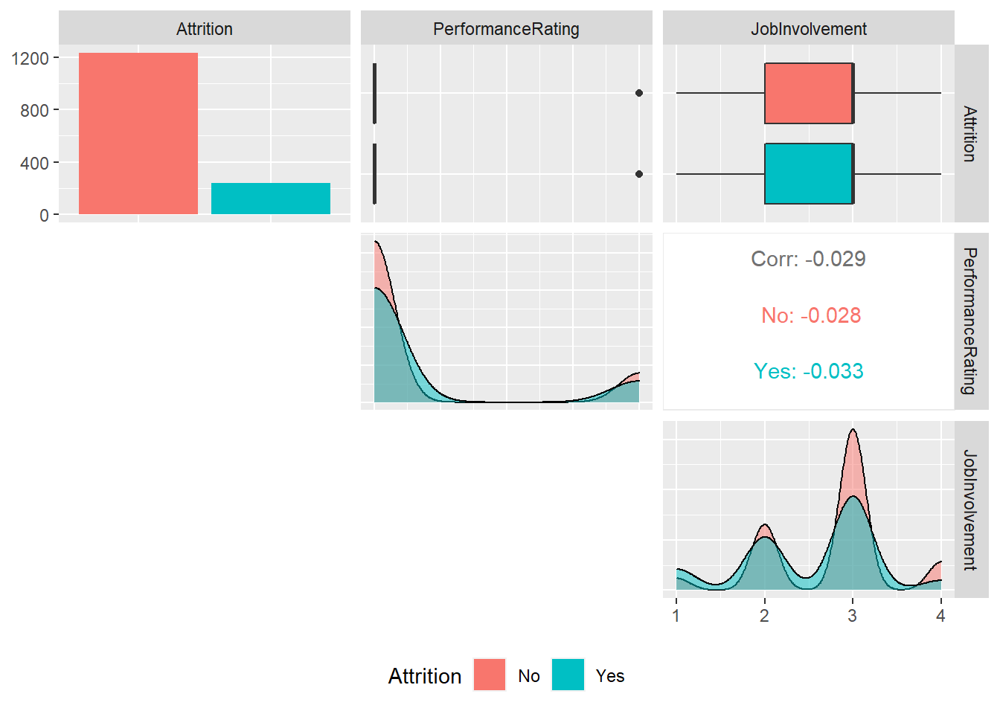
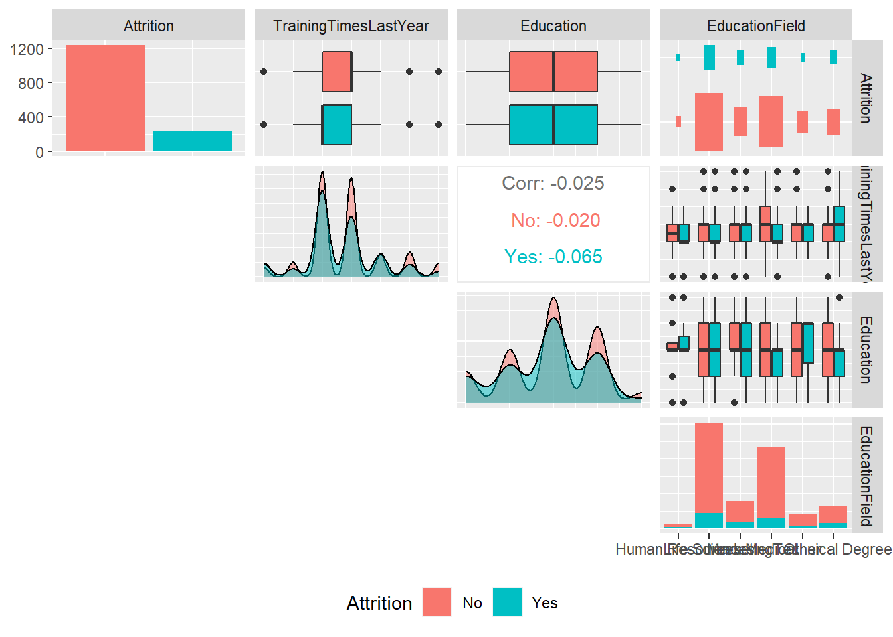
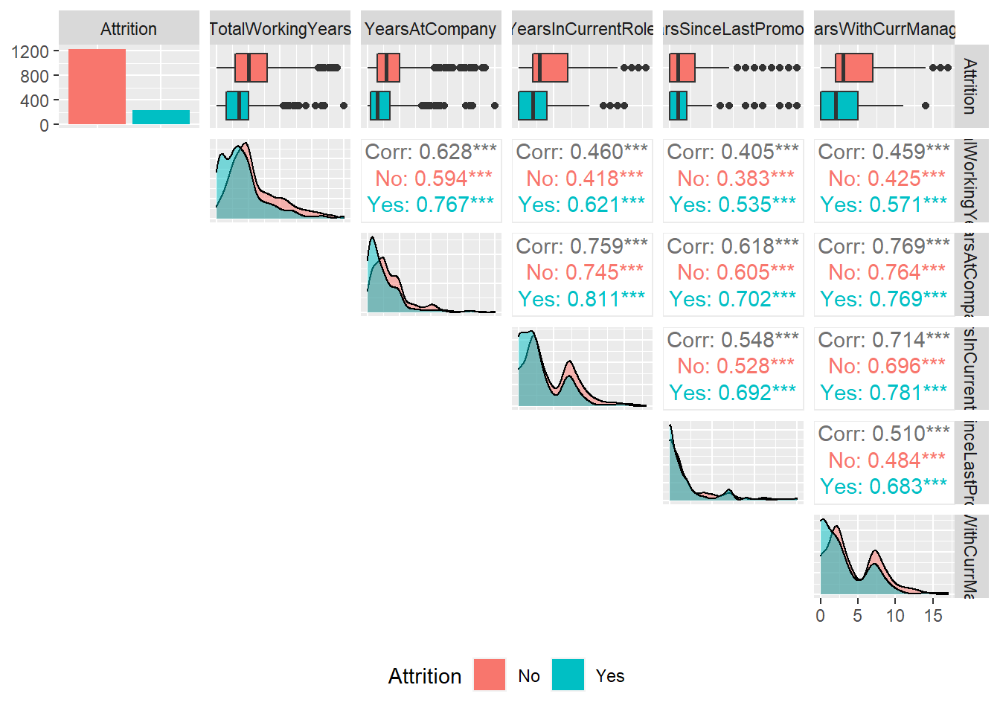

Machine Learning
Milena Roesch
21 3 2021
2020 | 9 | 3 Last compiled: 2021-03-23
1 Stock Data - Session 6 - Machine Learning Fundamentals
# Libraries
library(tidyverse)
library(tidyquant)
library(broom)
library(umap)
library(plotly)
library(ggrepel)
library(ggthemes)
# Load information ----
# STOCK PRICES
sp_500_prices_tbl <- read_rds("00_data/06_challenge/sp_500_prices_tbl.rds") %>%
select("symbol", "date", "adjusted")
# SECTOR INFORMATION
sp_500_index_tbl <- read_rds("00_data/06_challenge/sp_500_index_tbl.rds") %>%
select("company", "symbol", "sector")
# DAILY RETURNS
sp_500_daily_returns_tbl <- sp_500_prices_tbl %>%
mutate(date = as.Date(date, "%Y-%M-%D")) %>%
filter(date >= as.Date("2017-12-31")) %>%
group_by(symbol) %>%
mutate(previous_adjusted = lag(adjusted, n=1)) %>%
filter(!is.na(previous_adjusted)) %>%
mutate(pct_return = (adjusted - previous_adjusted)/previous_adjusted) %>%
ungroup() %>%
select("symbol", "date", "pct_return")
stock_date_matrix_tbl <- sp_500_daily_returns_tbl %>%
pivot_wider(
names_from = "date",
values_from = "pct_return",
values_fill = 0
)
kmeans_mapper <- function(center) {
stock_date_matrix_tbl %>%
select(-symbol) %>%
kmeans(centers = center, nstart = 20)
}
k_means_mapped_tbl <- tibble(centers = 1:30) %>%
mutate(k_means = map(centers, kmeans_mapper)) %>%
mutate(glance = map(k_means, glance))
# Visualize Scree Plot ----
k_means_mapped_tbl %>%
unnest(glance) %>%
select(centers, tot.withinss) %>%
ggplot(aes(centers, tot.withinss)) +
geom_point(color = "#2DC6D6", size = 4) +
geom_line(color = "#2DC6D6", size = 1) +
ggrepel::geom_label_repel(aes(label = centers), color = "#2DC6D6") +
labs(
title = "Scree Plot"
)# Visualization: UMAP ------
umap_results <- stock_date_matrix_tbl %>%
select(-symbol) %>%
umap()
# Convert umap results to tibble with symbols
umap_results_tbl <- umap_results$layout %>%
as_tibble() %>%
bind_cols(
stock_date_matrix_tbl %>% select(symbol)
)
# Visualize UMAP results
k_means_mapped_official_tbl <- read_rds("00_data/06_challenge/k_means_mapped_tbl.rds")
umap_results_official_tbl <- read_rds("00_data/06_challenge/umap_results_tbl.rds")
umap_results_official_tbl %>%
ggplot(aes(V1, V2)) +
geom_point(alpha=0.5) +
theme_tq() +
labs(
title = "UMAP Projection"
)# Combine K-means and UMAP ----
k_means_obj <- k_means_mapped_official_tbl %>%
filter(centers == 10) %>%
pull(k_means) %>%
pluck(1)
umap_kmeans_results_tbl <- k_means_obj %>%
augment(stock_date_matrix_tbl) %>%
select(symbol, .cluster) %>%
left_join(umap_results_official_tbl, by = "symbol") %>%
left_join((sp_500_index_tbl %>% select(symbol, company, sector)), by = "symbol")
# visualize combined k-means and umap results ----
ggplot(umap_kmeans_results_tbl, aes(V1, V2, color = .cluster)) +
geom_point(
na.rm = TRUE,
alpha = 1/2
) +
labs(
title = "Visualization of k_means and UMAP results combined"
) +
theme(legend.position = "none",
)2 Using a Recipe for the previous Business Case Analysis on Product Gaps and Pricing of our Bike Data - Session 7 & 8 - Supervised ML - Regression
# Standard
library(tidyverse)
library(dplyr)
# Modeling
library(parsnip)
# Preprocessing & Sampling
library(recipes)
library(rsample)
# Workflows
library(workflows)
# Modeling Error Metrics
library(yardstick)
# Plotting Decision Trees
library(rpart.plot)
# Modeling ----------------------------------------------------------------
bike_orderlines_tbl <- readRDS("00_data/01_bike_sales/02_wrangled_data/bike_orderlines.rds")
model_sales_tbl <- bike_orderlines_tbl %>%
select(total_price, model, category_2, frame_material) %>%
group_by(model, category_2, frame_material) %>%
summarise(total_sales = sum(total_price)) %>%
ungroup() %>%
arrange(desc(total_sales))
model_sales_tbl %>%
mutate(category_2 = as_factor(category_2) %>%
fct_reorder(total_sales, .fun = max) %>%
fct_rev()) %>%
ggplot(aes(frame_material, total_sales)) +
geom_violin() +
geom_jitter(width = 0.1, alpha = 0.5, color = "#2c3e50") +
#coord_flip() +
facet_wrap(~ category_2) +
scale_y_continuous(labels = scales::dollar_format(scale = 1e-6, suffix = "M", accuracy = 0.1)) +
tidyquant::theme_tq() +
labs(
title = "Total Sales for Each Model",
x = "Frame Material", y = "Revenue"
)bike_features_tbl <- readRDS("00_data/01_bike_sales/02_wrangled_data/bike_features_tbl.rds")
names(bike_features_tbl) <- str_replace_all(names(bike_features_tbl), c(" " = "_" , "," = "" ))
# Set Shift Lever as alternative input if Rear Derailleur is na
bike_features_tbl$Rear_Derailleur[is.na(bike_features_tbl$Rear_Derailleur)] <- bike_features_tbl$Shift_Lever[is.na(bike_features_tbl$Rear_Derailleur)]
bike_features_tbl <- bike_features_tbl %>%
rename(Rear_Derailleur_Shift_Lever = Rear_Derailleur) %>%
drop_na(Rear_Derailleur_Shift_Lever) %>%
mutate(id = row_number())
# Splitting Data ----
set.seed(seed = 1113)
split_obj <- rsample::initial_split(bike_features_tbl, prop = 0.80,
strata = "category_2")
# Check if testing contains all category_2 values
split_obj %>% training() %>% distinct(category_2)## # A tibble: 16 x 1
## category_2
## <chr>
## 1 Race
## 2 City Bikes
## 3 Fat Bikes
## 4 Endurance
## 5 E-Road
## 6 Cross-Country
## 7 Gravel Bike
## 8 Trail
## 9 E-Mountain
## 10 Cyclocross
## 11 Touring Bikes
## 12 E-Trekking
## 13 E-Fitness
## 14 Downhill
## 15 Triathlon Bike
## 16 Endurosplit_obj %>% testing() %>% distinct(category_2)## # A tibble: 12 x 1
## category_2
## <chr>
## 1 Race
## 2 City Bikes
## 3 Fat Bikes
## 4 Endurance
## 5 Cross-Country
## 6 Gravel Bike
## 7 Trail
## 8 E-Mountain
## 9 Cyclocross
## 10 Touring Bikes
## 11 Triathlon Bike
## 12 Enduro# Assign training and test data
train_tbl <- training(split_obj)
test_tbl <- testing(split_obj)
# Recipe
bike_features_rec <-
recipe( ~ ., data = train_tbl) %>%
step_rm(all_predictors(), - Rear_Derailleur_Shift_Lever) %>%
step_dummy(all_nominal(), - all_outcomes()) %>%
prep()
bike_transformed_tbl <- bake(bike_features_rec, new_data = NULL)
# Continue by putting in a workflow, test, etc. --> NOT PROCESSED THROUGH HERE3 Employee Attrition - Session 9 - Automated Machine Learning with H20 (I)
# Standard
library(tidyverse)
library(readxl)
library(skimr)
library(GGally)
#Load data
employee_attrition_tbl <- read_csv("./00_data/09_automated_ML_h2o/datasets-1067-1925-WA_Fn-UseC_-HR-Employee-Attrition.csv")
dept_job_role_tbl <- employee_attrition_tbl %>%
select(EmployeeNumber, Department, JobRole, PerformanceRating, Attrition)
# Business & Data Understanding: Department and Job Role ----
# Data subset
dept_job_role_tbl %>%
group_by(Department, JobRole, Attrition)## # A tibble: 1,470 x 5
## # Groups: Department, JobRole, Attrition [21]
## EmployeeNumber Department JobRole PerformanceRati~ Attrition
## <dbl> <chr> <chr> <dbl> <chr>
## 1 1 Sales Sales Executive 3 Yes
## 2 2 Research & Devel~ Research Scienti~ 4 No
## 3 4 Research & Devel~ Laboratory Techn~ 3 Yes
## 4 5 Research & Devel~ Research Scienti~ 3 No
## 5 7 Research & Devel~ Laboratory Techn~ 3 No
## 6 8 Research & Devel~ Laboratory Techn~ 3 No
## 7 10 Research & Devel~ Laboratory Techn~ 4 No
## 8 11 Research & Devel~ Laboratory Techn~ 4 No
## 9 12 Research & Devel~ Manufacturing Di~ 4 No
## 10 13 Research & Devel~ Healthcare Repre~ 3 No
## # ... with 1,460 more rows# Function to convert counts to percentages.
count_to_pct <- function(data, ..., col = n) {
# capture the dots
grouping_vars_expr <- quos(...)
col_expr <- enquo(col)
ret <- data %>%
group_by(!!! grouping_vars_expr) %>%
mutate(pct = (!! col_expr) / sum(!! col_expr)) %>%
ungroup()
return(ret)
}
dept_job_role_tbl %>%
count(JobRole, Attrition) %>%
count_to_pct(JobRole)## # A tibble: 18 x 4
## JobRole Attrition n pct
## <chr> <chr> <int> <dbl>
## 1 Healthcare Representative No 122 0.931
## 2 Healthcare Representative Yes 9 0.0687
## 3 Human Resources No 40 0.769
## 4 Human Resources Yes 12 0.231
## 5 Laboratory Technician No 197 0.761
## 6 Laboratory Technician Yes 62 0.239
## 7 Manager No 97 0.951
## 8 Manager Yes 5 0.0490
## 9 Manufacturing Director No 135 0.931
## 10 Manufacturing Director Yes 10 0.0690
## 11 Research Director No 78 0.975
## 12 Research Director Yes 2 0.025
## 13 Research Scientist No 245 0.839
## 14 Research Scientist Yes 47 0.161
## 15 Sales Executive No 269 0.825
## 16 Sales Executive Yes 57 0.175
## 17 Sales Representative No 50 0.602
## 18 Sales Representative Yes 33 0.398dept_job_role_tbl %>%
count(Department, JobRole, Attrition) %>%
count_to_pct(Department, JobRole)## # A tibble: 21 x 5
## Department JobRole Attrition n pct
## <chr> <chr> <chr> <int> <dbl>
## 1 Human Resources Human Resources No 40 0.769
## 2 Human Resources Human Resources Yes 12 0.231
## 3 Human Resources Manager No 11 1
## 4 Research & Development Healthcare Representative No 122 0.931
## 5 Research & Development Healthcare Representative Yes 9 0.0687
## 6 Research & Development Laboratory Technician No 197 0.761
## 7 Research & Development Laboratory Technician Yes 62 0.239
## 8 Research & Development Manager No 51 0.944
## 9 Research & Development Manager Yes 3 0.0556
## 10 Research & Development Manufacturing Director No 135 0.931
## # ... with 11 more rowsassess_attrition <- function(data, attrition_col, attrition_value, baseline_pct) {
attrition_col_expr <- enquo(attrition_col)
data %>%
# Use parenthesis () to give tidy eval evaluation priority
filter((!! attrition_col_expr) %in% attrition_value) %>%
arrange(desc(pct)) %>%
mutate(
# Function inputs in numeric format (e.g. baseline_pct = 0.088 don't require tidy eval)
above_industry_avg = case_when(
pct > baseline_pct ~ "Yes",
TRUE ~ "No"
)
)
}
# Attrition by job role
source("./00_scripts/9_assess_attrition.R")
# Function to calculate attrition cost ----
calculate_attrition_cost <- function(
# Employee
n = 1,
salary = 80000,
# Direct Costs
separation_cost = 500,
vacancy_cost = 10000,
acquisition_cost = 4900,
placement_cost = 3500,
# Productivity Costs
net_revenue_per_employee = 250000,
workdays_per_year = 240,
workdays_position_open = 40,
workdays_onboarding = 60,
onboarding_efficiency = 0.50
) {
# Direct Costs
direct_cost <- sum(separation_cost, vacancy_cost, acquisition_cost, placement_cost)
# Lost Productivity Costs
productivity_cost <- net_revenue_per_employee / workdays_per_year *
(workdays_position_open + workdays_onboarding * onboarding_efficiency)
# Savings of Salary & Benefits (Cost Reduction)
salary_benefit_reduction <- salary / workdays_per_year * workdays_position_open
# Estimated Turnover Per Employee
cost_per_employee <- direct_cost + productivity_cost - salary_benefit_reduction
# Total Cost of Employee Turnover
total_cost <- n * cost_per_employee
return(total_cost)
}
dept_job_role_tbl %>%
count(Department, JobRole, Attrition) %>%
count_to_pct(Department, JobRole) %>%
assess_attrition(Attrition, attrition_value = "Yes", baseline_pct = 0.088) %>%
mutate(
cost_of_attrition = calculate_attrition_cost(n = n, salary = 80000)
)## # A tibble: 10 x 7
## Department JobRole Attrition n pct above_industry_~ cost_of_attriti~
## <chr> <chr> <chr> <int> <dbl> <chr> <dbl>
## 1 Sales Sales R~ Yes 33 0.398 Yes 2589950.
## 2 Research &~ Laborat~ Yes 62 0.239 Yes 4865967.
## 3 Human Reso~ Human R~ Yes 12 0.231 Yes 941800.
## 4 Sales Sales E~ Yes 57 0.175 Yes 4473550.
## 5 Research &~ Researc~ Yes 47 0.161 Yes 3688717.
## 6 Research &~ Manufac~ Yes 10 0.0690 No 784833.
## 7 Research &~ Healthc~ Yes 9 0.0687 No 706350.
## 8 Research &~ Manager Yes 3 0.0556 No 235450.
## 9 Sales Manager Yes 2 0.0541 No 156967.
## 10 Research &~ Researc~ Yes 2 0.025 No 156967.#Visualization ----
# Function to plot attrition
plot_attrition <- function(data,
...,
.value,
fct_reorder = TRUE,
fct_rev = FALSE,
include_lbl = TRUE,
color = "#2dc6d6",
units = c("0", "K", "M")) {
### Inputs
group_vars_expr <- quos(...)
# If the user does not supply anything,
# this takes the first column of the supplied data
if (length(group_vars_expr) == 0) {
group_vars_expr <- quos(rlang::sym(colnames(data)[[1]]))
}
value_expr <- enquo(.value)
units_val <- switch(units[[1]],
"M" = 1e6,
"K" = 1e3,
"0" = 1)
if (units[[1]] == "0") units <- ""
# Data Manipulation
# This is a so called Function Factory (a function that produces a function)
usd <- scales::dollar_format(prefix = "$", largest_with_cents = 1e3)
# Create the axis labels and values for the plot
data_manipulated <- data %>%
mutate(name = str_c(!!! group_vars_expr, sep = ": ") %>% as_factor()) %>%
mutate(value_text = str_c(usd(!! value_expr / units_val),
units[[1]], sep = ""))
# Order the labels on the y-axis according to the input
if (fct_reorder) {
data_manipulated <- data_manipulated %>%
mutate(name = forcats::fct_reorder(name, !! value_expr)) %>%
arrange(name)
}
if (fct_rev) {
data_manipulated <- data_manipulated %>%
mutate(name = forcats::fct_rev(name)) %>%
arrange(name)
}
# Visualization
g <- data_manipulated %>%
# "name" is a column name generated by our function internally as part of the data manipulation task
ggplot(aes(x = (!! value_expr), y = name)) +
geom_segment(aes(xend = 0, yend = name), color = color) +
geom_point(aes(size = !! value_expr), color = color) +
scale_x_continuous(labels = scales::dollar) +
scale_size(range = c(3, 5)) +
theme(legend.position = "none")
# Plot labels if TRUE
if (include_lbl) {
g <- g +
geom_label(aes(label = value_text, size = !! value_expr),
hjust = "inward", color = color)
}
return(g)
}
#Visualization
dept_job_role_tbl %>%
# Select columnns
count(Department, JobRole, Attrition) %>%
count_to_pct(Department, JobRole) %>%
assess_attrition(Attrition, attrition_value = "Yes", baseline_pct = 0.088) %>%
mutate(
cost_of_attrition = calculate_attrition_cost(n = n, salary = 80000)
) %>%
# Select columnns
plot_attrition(Department, JobRole, .value = cost_of_attrition,
units = "M") +
labs(
title = "Estimated Cost of Attrition by Job Role",
x = "Cost of Attrition",
subtitle = "Looks like Sales Executive and Labaratory Technician are the biggest drivers of cost"
)
# Data understanding -----
path_data_definitions <- "./00_data/09_automated_ML_h2o/data_definitions.xlsx"
definitions_raw_tbl <- read_excel(path_data_definitions, sheet = 1, col_names = FALSE)
# Descriptive Features
employee_attrition_tbl %>% select(Age, DistanceFromHome, Gender, MaritalStatus, NumCompaniesWorked, Over18)## # A tibble: 1,470 x 6
## Age DistanceFromHome Gender MaritalStatus NumCompaniesWorked Over18
## <dbl> <dbl> <chr> <chr> <dbl> <chr>
## 1 41 1 Female Single 8 Y
## 2 49 8 Male Married 1 Y
## 3 37 2 Male Single 6 Y
## 4 33 3 Female Married 1 Y
## 5 27 2 Male Married 9 Y
## 6 32 2 Male Single 0 Y
## 7 59 3 Female Married 4 Y
## 8 30 24 Male Divorced 1 Y
## 9 38 23 Male Single 0 Y
## 10 36 27 Male Married 6 Y
## # ... with 1,460 more rows# Employment Features
employee_attrition_tbl %>% select(Department, EmployeeCount, EmployeeNumber, JobInvolvement, JobLevel, JobRole, JobSatisfaction)## # A tibble: 1,470 x 7
## Department EmployeeCount EmployeeNumber JobInvolvement JobLevel JobRole
## <chr> <dbl> <dbl> <dbl> <dbl> <chr>
## 1 Sales 1 1 3 2 Sales ~
## 2 Research ~ 1 2 2 2 Resear~
## 3 Research ~ 1 4 2 1 Labora~
## 4 Research ~ 1 5 3 1 Resear~
## 5 Research ~ 1 7 3 1 Labora~
## 6 Research ~ 1 8 3 1 Labora~
## 7 Research ~ 1 10 4 1 Labora~
## 8 Research ~ 1 11 3 1 Labora~
## 9 Research ~ 1 12 2 3 Manufa~
## 10 Research ~ 1 13 3 2 Health~
## # ... with 1,460 more rows, and 1 more variable: JobSatisfaction <dbl># Compensation Features
employee_attrition_tbl %>% select(DailyRate, HourlyRate, MonthlyIncome, MonthlyRate, PercentSalaryHike, StockOptionLevel)## # A tibble: 1,470 x 6
## DailyRate HourlyRate MonthlyIncome MonthlyRate PercentSalaryHi~
## <dbl> <dbl> <dbl> <dbl> <dbl>
## 1 1102 94 5993 19479 11
## 2 279 61 5130 24907 23
## 3 1373 92 2090 2396 15
## 4 1392 56 2909 23159 11
## 5 591 40 3468 16632 12
## 6 1005 79 3068 11864 13
## 7 1324 81 2670 9964 20
## 8 1358 67 2693 13335 22
## 9 216 44 9526 8787 21
## 10 1299 94 5237 16577 13
## # ... with 1,460 more rows, and 1 more variable: StockOptionLevel <dbl># Survery Results
employee_attrition_tbl %>% select(EnvironmentSatisfaction, JobSatisfaction, RelationshipSatisfaction, WorkLifeBalance)## # A tibble: 1,470 x 4
## EnvironmentSatisfacti~ JobSatisfaction RelationshipSatisfact~ WorkLifeBalance
## <dbl> <dbl> <dbl> <dbl>
## 1 2 4 1 1
## 2 3 2 4 3
## 3 4 3 2 3
## 4 4 3 3 3
## 5 1 2 4 3
## 6 4 4 3 2
## 7 3 1 1 2
## 8 4 3 2 3
## 9 4 3 2 3
## 10 3 3 2 2
## # ... with 1,460 more rows# Performance Data
employee_attrition_tbl %>% select(JobInvolvement, PerformanceRating)## # A tibble: 1,470 x 2
## JobInvolvement PerformanceRating
## <dbl> <dbl>
## 1 3 3
## 2 2 4
## 3 2 3
## 4 3 3
## 5 3 3
## 6 3 3
## 7 4 4
## 8 3 4
## 9 2 4
## 10 3 3
## # ... with 1,460 more rows# Work-Life Features
employee_attrition_tbl %>% select(BusinessTravel, OverTime)## # A tibble: 1,470 x 2
## BusinessTravel OverTime
## <chr> <chr>
## 1 Travel_Rarely Yes
## 2 Travel_Frequently No
## 3 Travel_Rarely Yes
## 4 Travel_Frequently Yes
## 5 Travel_Rarely No
## 6 Travel_Frequently No
## 7 Travel_Rarely Yes
## 8 Travel_Rarely No
## 9 Travel_Frequently No
## 10 Travel_Rarely No
## # ... with 1,460 more rows# Training & Education
employee_attrition_tbl %>% select(Education, EducationField, TrainingTimesLastYear)## # A tibble: 1,470 x 3
## Education EducationField TrainingTimesLastYear
## <dbl> <chr> <dbl>
## 1 2 Life Sciences 0
## 2 1 Life Sciences 3
## 3 2 Other 3
## 4 4 Life Sciences 3
## 5 1 Medical 3
## 6 2 Life Sciences 2
## 7 3 Medical 3
## 8 1 Life Sciences 2
## 9 3 Life Sciences 2
## 10 3 Medical 3
## # ... with 1,460 more rows# Time-Based Features
employee_attrition_tbl %>% select(TotalWorkingYears, YearsAtCompany, YearsInCurrentRole, YearsSinceLastPromotion, YearsWithCurrManager)## # A tibble: 1,470 x 5
## TotalWorkingYea~ YearsAtCompany YearsInCurrentR~ YearsSinceLastP~
## <dbl> <dbl> <dbl> <dbl>
## 1 8 6 4 0
## 2 10 10 7 1
## 3 7 0 0 0
## 4 8 8 7 3
## 5 6 2 2 2
## 6 8 7 7 3
## 7 12 1 0 0
## 8 1 1 0 0
## 9 10 9 7 1
## 10 17 7 7 7
## # ... with 1,460 more rows, and 1 more variable: YearsWithCurrManager <dbl># Step 1: Data Summarization -----
skim(employee_attrition_tbl)| Name | employee_attrition_tbl |
| Number of rows | 1470 |
| Number of columns | 35 |
| _______________________ | |
| Column type frequency: | |
| character | 9 |
| numeric | 26 |
| ________________________ | |
| Group variables | None |
Variable type: character
| skim_variable | n_missing | complete_rate | min | max | empty | n_unique | whitespace |
|---|---|---|---|---|---|---|---|
| Attrition | 0 | 1 | 2 | 3 | 0 | 2 | 0 |
| BusinessTravel | 0 | 1 | 10 | 17 | 0 | 3 | 0 |
| Department | 0 | 1 | 5 | 22 | 0 | 3 | 0 |
| EducationField | 0 | 1 | 5 | 16 | 0 | 6 | 0 |
| Gender | 0 | 1 | 4 | 6 | 0 | 2 | 0 |
| JobRole | 0 | 1 | 7 | 25 | 0 | 9 | 0 |
| MaritalStatus | 0 | 1 | 6 | 8 | 0 | 3 | 0 |
| Over18 | 0 | 1 | 1 | 1 | 0 | 1 | 0 |
| OverTime | 0 | 1 | 2 | 3 | 0 | 2 | 0 |
Variable type: numeric
| skim_variable | n_missing | complete_rate | mean | sd | p0 | p25 | p50 | p75 | p100 | hist |
|---|---|---|---|---|---|---|---|---|---|---|
| Age | 0 | 1 | 36.92 | 9.14 | 18 | 30.00 | 36.0 | 43.00 | 60 | ▂▇▇▃▂ |
| DailyRate | 0 | 1 | 802.49 | 403.51 | 102 | 465.00 | 802.0 | 1157.00 | 1499 | ▇▇▇▇▇ |
| DistanceFromHome | 0 | 1 | 9.19 | 8.11 | 1 | 2.00 | 7.0 | 14.00 | 29 | ▇▅▂▂▂ |
| Education | 0 | 1 | 2.91 | 1.02 | 1 | 2.00 | 3.0 | 4.00 | 5 | ▂▃▇▆▁ |
| EmployeeCount | 0 | 1 | 1.00 | 0.00 | 1 | 1.00 | 1.0 | 1.00 | 1 | ▁▁▇▁▁ |
| EmployeeNumber | 0 | 1 | 1024.87 | 602.02 | 1 | 491.25 | 1020.5 | 1555.75 | 2068 | ▇▇▇▇▇ |
| EnvironmentSatisfaction | 0 | 1 | 2.72 | 1.09 | 1 | 2.00 | 3.0 | 4.00 | 4 | ▅▅▁▇▇ |
| HourlyRate | 0 | 1 | 65.89 | 20.33 | 30 | 48.00 | 66.0 | 83.75 | 100 | ▇▇▇▇▇ |
| JobInvolvement | 0 | 1 | 2.73 | 0.71 | 1 | 2.00 | 3.0 | 3.00 | 4 | ▁▃▁▇▁ |
| JobLevel | 0 | 1 | 2.06 | 1.11 | 1 | 1.00 | 2.0 | 3.00 | 5 | ▇▇▃▂▁ |
| JobSatisfaction | 0 | 1 | 2.73 | 1.10 | 1 | 2.00 | 3.0 | 4.00 | 4 | ▅▅▁▇▇ |
| MonthlyIncome | 0 | 1 | 6502.93 | 4707.96 | 1009 | 2911.00 | 4919.0 | 8379.00 | 19999 | ▇▅▂▁▂ |
| MonthlyRate | 0 | 1 | 14313.10 | 7117.79 | 2094 | 8047.00 | 14235.5 | 20461.50 | 26999 | ▇▇▇▇▇ |
| NumCompaniesWorked | 0 | 1 | 2.69 | 2.50 | 0 | 1.00 | 2.0 | 4.00 | 9 | ▇▃▂▂▁ |
| PercentSalaryHike | 0 | 1 | 15.21 | 3.66 | 11 | 12.00 | 14.0 | 18.00 | 25 | ▇▅▃▂▁ |
| PerformanceRating | 0 | 1 | 3.15 | 0.36 | 3 | 3.00 | 3.0 | 3.00 | 4 | ▇▁▁▁▂ |
| RelationshipSatisfaction | 0 | 1 | 2.71 | 1.08 | 1 | 2.00 | 3.0 | 4.00 | 4 | ▅▅▁▇▇ |
| StandardHours | 0 | 1 | 80.00 | 0.00 | 80 | 80.00 | 80.0 | 80.00 | 80 | ▁▁▇▁▁ |
| StockOptionLevel | 0 | 1 | 0.79 | 0.85 | 0 | 0.00 | 1.0 | 1.00 | 3 | ▇▇▁▂▁ |
| TotalWorkingYears | 0 | 1 | 11.28 | 7.78 | 0 | 6.00 | 10.0 | 15.00 | 40 | ▇▇▂▁▁ |
| TrainingTimesLastYear | 0 | 1 | 2.80 | 1.29 | 0 | 2.00 | 3.0 | 3.00 | 6 | ▂▇▇▂▃ |
| WorkLifeBalance | 0 | 1 | 2.76 | 0.71 | 1 | 2.00 | 3.0 | 3.00 | 4 | ▁▃▁▇▂ |
| YearsAtCompany | 0 | 1 | 7.01 | 6.13 | 0 | 3.00 | 5.0 | 9.00 | 40 | ▇▂▁▁▁ |
| YearsInCurrentRole | 0 | 1 | 4.23 | 3.62 | 0 | 2.00 | 3.0 | 7.00 | 18 | ▇▃▂▁▁ |
| YearsSinceLastPromotion | 0 | 1 | 2.19 | 3.22 | 0 | 0.00 | 1.0 | 3.00 | 15 | ▇▁▁▁▁ |
| YearsWithCurrManager | 0 | 1 | 4.12 | 3.57 | 0 | 2.00 | 3.0 | 7.00 | 17 | ▇▂▅▁▁ |
# Character Data Type
employee_attrition_tbl %>%
select_if(is.character) %>%
glimpse()## Rows: 1,470
## Columns: 9
## $ Attrition <chr> "Yes", "No", "Yes", "No", "No", "No", "No", "No", "N...
## $ BusinessTravel <chr> "Travel_Rarely", "Travel_Frequently", "Travel_Rarely...
## $ Department <chr> "Sales", "Research & Development", "Research & Devel...
## $ EducationField <chr> "Life Sciences", "Life Sciences", "Other", "Life Sci...
## $ Gender <chr> "Female", "Male", "Male", "Female", "Male", "Male", ...
## $ JobRole <chr> "Sales Executive", "Research Scientist", "Laboratory...
## $ MaritalStatus <chr> "Single", "Married", "Single", "Married", "Married",...
## $ Over18 <chr> "Y", "Y", "Y", "Y", "Y", "Y", "Y", "Y", "Y", "Y", "Y...
## $ OverTime <chr> "Yes", "No", "Yes", "Yes", "No", "No", "Yes", "No", ...# Get "levels"
employee_attrition_tbl %>%
select_if(is.character) %>%
map(unique)## $Attrition
## [1] "Yes" "No"
##
## $BusinessTravel
## [1] "Travel_Rarely" "Travel_Frequently" "Non-Travel"
##
## $Department
## [1] "Sales" "Research & Development" "Human Resources"
##
## $EducationField
## [1] "Life Sciences" "Other" "Medical" "Marketing"
## [5] "Technical Degree" "Human Resources"
##
## $Gender
## [1] "Female" "Male"
##
## $JobRole
## [1] "Sales Executive" "Research Scientist"
## [3] "Laboratory Technician" "Manufacturing Director"
## [5] "Healthcare Representative" "Manager"
## [7] "Sales Representative" "Research Director"
## [9] "Human Resources"
##
## $MaritalStatus
## [1] "Single" "Married" "Divorced"
##
## $Over18
## [1] "Y"
##
## $OverTime
## [1] "Yes" "No"# Proportions
employee_attrition_tbl %>%
select_if(is.character) %>%
map(~ table(.) %>% prop.table())## $Attrition
## .
## No Yes
## 0.8387755 0.1612245
##
## $BusinessTravel
## .
## Non-Travel Travel_Frequently Travel_Rarely
## 0.1020408 0.1884354 0.7095238
##
## $Department
## .
## Human Resources Research & Development Sales
## 0.04285714 0.65374150 0.30340136
##
## $EducationField
## .
## Human Resources Life Sciences Marketing Medical
## 0.01836735 0.41224490 0.10816327 0.31564626
## Other Technical Degree
## 0.05578231 0.08979592
##
## $Gender
## .
## Female Male
## 0.4 0.6
##
## $JobRole
## .
## Healthcare Representative Human Resources Laboratory Technician
## 0.08911565 0.03537415 0.17619048
## Manager Manufacturing Director Research Director
## 0.06938776 0.09863946 0.05442177
## Research Scientist Sales Executive Sales Representative
## 0.19863946 0.22176871 0.05646259
##
## $MaritalStatus
## .
## Divorced Married Single
## 0.2224490 0.4578231 0.3197279
##
## $Over18
## .
## Y
## 1
##
## $OverTime
## .
## No Yes
## 0.7170068 0.2829932# Numeric Data
employee_attrition_tbl %>%
select_if(is.numeric) %>%
map(~ unique(.) %>% length())## $Age
## [1] 43
##
## $DailyRate
## [1] 886
##
## $DistanceFromHome
## [1] 29
##
## $Education
## [1] 5
##
## $EmployeeCount
## [1] 1
##
## $EmployeeNumber
## [1] 1470
##
## $EnvironmentSatisfaction
## [1] 4
##
## $HourlyRate
## [1] 71
##
## $JobInvolvement
## [1] 4
##
## $JobLevel
## [1] 5
##
## $JobSatisfaction
## [1] 4
##
## $MonthlyIncome
## [1] 1349
##
## $MonthlyRate
## [1] 1427
##
## $NumCompaniesWorked
## [1] 10
##
## $PercentSalaryHike
## [1] 15
##
## $PerformanceRating
## [1] 2
##
## $RelationshipSatisfaction
## [1] 4
##
## $StandardHours
## [1] 1
##
## $StockOptionLevel
## [1] 4
##
## $TotalWorkingYears
## [1] 40
##
## $TrainingTimesLastYear
## [1] 7
##
## $WorkLifeBalance
## [1] 4
##
## $YearsAtCompany
## [1] 37
##
## $YearsInCurrentRole
## [1] 19
##
## $YearsSinceLastPromotion
## [1] 16
##
## $YearsWithCurrManager
## [1] 18employee_attrition_tbl %>%
select_if(is.numeric) %>%
map_df(~ unique(.) %>% length()) %>%
# Select all columns
pivot_longer(everything()) %>%
arrange(value) %>%
filter(value <= 10)## # A tibble: 13 x 2
## name value
## <chr> <int>
## 1 EmployeeCount 1
## 2 StandardHours 1
## 3 PerformanceRating 2
## 4 EnvironmentSatisfaction 4
## 5 JobInvolvement 4
## 6 JobSatisfaction 4
## 7 RelationshipSatisfaction 4
## 8 StockOptionLevel 4
## 9 WorkLifeBalance 4
## 10 Education 5
## 11 JobLevel 5
## 12 TrainingTimesLastYear 7
## 13 NumCompaniesWorked 10# Step 2: Data Visualization ----
employee_attrition_tbl %>%
select(Attrition, Age, Gender, MaritalStatus, NumCompaniesWorked, Over18, DistanceFromHome) %>%
ggpairs(aes(color = Attrition), lower = "blank", legend = 1,
diag = list(continuous = wrap("densityDiag", alpha = 0.5))) +
theme(legend.position = "bottom")# Create data tibble, to potentially debug the plot_ggpairs function (because it has a data argument)
data <- employee_attrition_tbl %>%
select(Attrition, Age, Gender, MaritalStatus, NumCompaniesWorked, Over18, DistanceFromHome)
plot_ggpairs <- function(data, color = NULL, density_alpha = 0.5) {
color_expr <- enquo(color)
if (rlang::quo_is_null(color_expr)) {
g <- data %>%
ggpairs(lower = "blank")
} else {
color_name <- quo_name(color_expr)
g <- data %>%
ggpairs(mapping = aes_string(color = color_name),
lower = "blank", legend = 1,
diag = list(continuous = wrap("densityDiag",
alpha = density_alpha))) +
theme(legend.position = "bottom")
}
return(g)
}
employee_attrition_tbl %>%
select(Attrition, Age, Gender, MaritalStatus, NumCompaniesWorked, Over18, DistanceFromHome) %>%
plot_ggpairs(color = Attrition)
# Explore Features by Category
# 1. Descriptive features: age, gender, marital status
employee_attrition_tbl %>%
select(Attrition, Age, Gender, MaritalStatus, NumCompaniesWorked, Over18, DistanceFromHome) %>%
plot_ggpairs(Attrition)
# 2. Employment features: department, job role, job level
employee_attrition_tbl %>%
select(Attrition, contains("employee"), contains("department"), contains("job")) %>%
plot_ggpairs(Attrition)# 3. Compensation features: HourlyRate, MonthlyIncome, StockOptionLevel
employee_attrition_tbl %>%
select(Attrition, contains("income"), contains("rate"), contains("salary"), contains("stock")) %>%
plot_ggpairs(Attrition)
# 4. Survey Results: Satisfaction level, WorkLifeBalance
employee_attrition_tbl %>%
select(Attrition, contains("satisfaction"), contains("life")) %>%
plot_ggpairs(Attrition)
# 5. Performance Data: Job Involvment, Performance Rating
employee_attrition_tbl %>%
select(Attrition, contains("performance"), contains("involvement")) %>%
plot_ggpairs(Attrition)
# 6. Work-Life Features
employee_attrition_tbl %>%
select(Attrition, contains("overtime"), contains("travel")) %>%
plot_ggpairs(Attrition)
# 7. Training and Education
employee_attrition_tbl %>%
select(Attrition, contains("training"), contains("education")) %>%
plot_ggpairs(Attrition)
# 8. Time-Based Features: Years at company, years in current role
employee_attrition_tbl %>%
select(Attrition, contains("years")) %>%
plot_ggpairs(Attrition)
# 1. Compensation Features What can you deduce about the interaction between Monthly Income and Attrition?
# c. Those that are leaving have a lower Monthly Income
# 2. Compensation Features What can you deduce about the interaction between Percent Salary Hike and Attrition?
# d. Itâs difficult to deduce anything based on the visualization
# 3. Compensation Features What can you deduce about the interaction between Stock Option Level and Attrition?
# b. Those that are staying have a higher stock option level
# 4. Survey Results What can you deduce about the interaction between Environment Satisfaction and Attrition?
# a. A higher proportion of those leaving have a low environment satisfaction level
# 5. Survey Results What can you deduce about the interaction between Work Life Balance and Attrition?
# b. Those that are staying have a higher density of 2âs and 3âs
# 6. Performance Data What Can you deduce about the interaction between Job Involvement and Attrition?
# a. Those that are leaving have a lower density of 3âs and 4âs
# 7. Work-Life Features What can you deduce about the interaction between Over Time and Attrition?
# a. The proportion of those leaving that are working Over Time are high compared to those that are not leaving
# 8. Training and Education What can you deduce about the interaction between Training Times Last Year and Attrition
# b. People that leave tend to have less annual trainings
# 9. Time-Based Features What can you deduce about the interaction between Years At Company and Attrition
# b. People that leave tend to have less working years at the company
# 10. Time-Based Features What can you deduce about the interaction between Years Since Last Promotion and Attrition?
# c. Itâs difficult to deduce anything based on the visualization4 Business Case on Employee Attrition and Product Backorders Challenge - Session 10 - Automated Machine Learning with H20 (II)
4.1 Business Case
# Load data
library(tidyverse)
library(readxl)
library(rsample)
library(recipes)
library(PerformanceAnalytics)
library(h2o)
process_hr_data_readable <- function(data, definitions_tbl) {
definitions_list <- definitions_tbl %>%
fill(...1, .direction = "down") %>%
filter(!is.na(...2)) %>%
separate(...2, into = c("key", "value"), sep = " '", remove = TRUE) %>%
rename(column_name = ...1) %>%
mutate(key = as.numeric(key)) %>%
mutate(value = value %>% str_replace(pattern = "'", replacement = "")) %>%
split(.$column_name) %>%
map(~ select(., -column_name)) %>%
map(~ mutate(., value = as_factor(value)))
for (i in seq_along(definitions_list)) {
list_name <- names(definitions_list)[i]
colnames(definitions_list[[i]]) <- c(list_name, paste0(list_name, "_value"))
}
data_merged_tbl <- list(HR_Data = data) %>%
append(definitions_list, after = 1) %>%
reduce(left_join) %>%
select(-one_of(names(definitions_list))) %>%
set_names(str_replace_all(names(.), pattern = "_value",
replacement = "")) %>%
select(sort(names(.))) %>%
mutate_if(is.character, as.factor) %>%
mutate(
BusinessTravel = BusinessTravel %>% fct_relevel("Non-Travel",
"Travel_Rarely",
"Travel_Frequently"),
MaritalStatus = MaritalStatus %>% fct_relevel("Single",
"Married",
"Divorced")
)
return(data_merged_tbl)
}
# H2O Modelling
employee_attrition_tbl <- read_csv("./00_data/09_automated_ML_h2o/datasets-1067-1925-WA_Fn-UseC_-HR-Employee-Attrition.csv")
definitions_raw_tbl <- read_excel("./00_data/09_automated_ML_h2o/data_definitions.xlsx", sheet = 1, col_names = FALSE)
employee_attrition_readable_tbl <- process_hr_data_readable(employee_attrition_tbl, definitions_raw_tbl)
set.seed(seed = 1113)
split_obj <- rsample::initial_split(employee_attrition_readable_tbl, prop = 0.85)
train_readable_tbl <- training(split_obj)
test_readable_tbl <- testing(split_obj)
recipe_obj <- recipe(Attrition ~., data = train_readable_tbl) %>%
step_zv(all_predictors()) %>%
step_mutate_at(JobLevel, StockOptionLevel, fn = as.factor) %>%
prep()
train_tbl <- bake(recipe_obj, new_data = train_readable_tbl)
test_tbl <- bake(recipe_obj, new_data = test_readable_tbl)
# Modeling
h2o.init()## Connection successful!
##
## R is connected to the H2O cluster:
## H2O cluster uptime: 2 hours 7 minutes
## H2O cluster timezone: Europe/Berlin
## H2O data parsing timezone: UTC
## H2O cluster version: 3.32.0.1
## H2O cluster version age: 5 months and 14 days !!!
## H2O cluster name: H2O_started_from_R_milen_cgv301
## H2O cluster total nodes: 1
## H2O cluster total memory: 3.46 GB
## H2O cluster total cores: 8
## H2O cluster allowed cores: 8
## H2O cluster healthy: TRUE
## H2O Connection ip: localhost
## H2O Connection port: 54321
## H2O Connection proxy: NA
## H2O Internal Security: FALSE
## H2O API Extensions: Amazon S3, Algos, AutoML, Core V3, TargetEncoder, Core V4
## R Version: R version 4.0.1 (2020-06-06)# Split data into a training and a validation data frame
# Setting the seed is just for reproducability
split_h2o <- h2o.splitFrame(as.h2o(train_tbl), ratios = c(0.85), seed = 1234)##
|
| | 0%
|
|======================================================================| 100%train_h2o <- split_h2o[[1]]
valid_h2o <- split_h2o[[2]]
test_h2o <- as.h2o(test_tbl)##
|
| | 0%
|
|======================================================================| 100%# Set the target and predictors
y <- "Attrition"
x <- setdiff(names(train_h2o), y)
automl_models_h2o <- h2o.automl(
x = x,
y = y,
training_frame = train_h2o,
validation_frame = valid_h2o,
leaderboard_frame = test_h2o,
max_runtime_secs = 30,
nfolds = 5
)##
|
| | 0%
## 23:54:54.386: User specified a validation frame with cross-validation still enabled. Please note that the models will still be validated using cross-validation only, the validation frame will be used to provide purely informative validation metrics on the trained models.
## 23:54:54.388: AutoML: XGBoost is not available; skipping it.
|
|========= | 12%
|
|=============== | 21%
|
|==================== | 29%
|
|========================== | 38%
|
|============================= | 41%
|
|==================================== | 51%
|
|======================================== | 57%
|
|=============================================== | 68%
|
|======================================================================| 100%typeof(automl_models_h2o)## [1] "S4"slotNames(automl_models_h2o)## [1] "project_name" "leader" "leaderboard" "event_log"
## [5] "modeling_steps" "training_info"automl_models_h2o@leaderboard## model_id auc logloss
## 1 StackedEnsemble_BestOfFamily_AutoML_20210322_235454 0.8607048 0.2834365
## 2 GLM_1_AutoML_20210322_235454 0.8592088 0.2872668
## 3 DeepLearning_grid__1_AutoML_20210322_235454_model_2 0.8558843 0.3263335
## 4 StackedEnsemble_AllModels_AutoML_20210322_235454 0.8547207 0.2880988
## 5 DeepLearning_grid__1_AutoML_20210322_235454_model_1 0.8356051 0.3893780
## 6 GBM_grid__1_AutoML_20210322_235454_model_1 0.8352726 0.3159498
## aucpr mean_per_class_error rmse mse
## 1 0.6542869 0.2503324 0.2854561 0.08148518
## 2 0.6503790 0.2167553 0.2912301 0.08481496
## 3 0.6188641 0.2117686 0.3048449 0.09293041
## 4 0.6363262 0.2220745 0.2883706 0.08315758
## 5 0.5567339 0.2566489 0.3546093 0.12574778
## 6 0.5115389 0.2257314 0.3102689 0.09626678
##
## [22 rows x 7 columns]automl_models_h2o@leader## Model Details:
## ==============
##
## H2OBinomialModel: stackedensemble
## Model ID: StackedEnsemble_BestOfFamily_AutoML_20210322_235454
## Number of Base Models: 5
##
## Base Models (count by algorithm type):
##
## deeplearning drf gbm glm
## 1 2 1 1
##
## Metalearner:
##
## Metalearner algorithm: glm
## Metalearner cross-validation fold assignment:
## Fold assignment scheme: AUTO
## Number of folds: 5
## Fold column: NULL
## Metalearner hyperparameters:
##
##
## H2OBinomialMetrics: stackedensemble
## ** Reported on training data. **
##
## MSE: 0.05042291
## RMSE: 0.2245505
## LogLoss: 0.1882037
## Mean Per-Class Error: 0.1186675
## AUC: 0.9690939
## AUCPR: 0.8970352
## Gini: 0.9381878
##
## Confusion Matrix (vertical: actual; across: predicted) for F1-optimal threshold:
## No Yes Error Rate
## No 869 22 0.024691 =22/891
## Yes 37 137 0.212644 =37/174
## Totals 906 159 0.055399 =59/1065
##
## Maximum Metrics: Maximum metrics at their respective thresholds
## metric threshold value idx
## 1 max f1 0.320376 0.822823 140
## 2 max f2 0.161003 0.827068 200
## 3 max f0point5 0.559015 0.876206 97
## 4 max accuracy 0.320376 0.944601 140
## 5 max precision 0.972724 1.000000 0
## 6 max recall 0.065439 1.000000 302
## 7 max specificity 0.972724 1.000000 0
## 8 max absolute_mcc 0.320376 0.791197 140
## 9 max min_per_class_accuracy 0.143650 0.890011 211
## 10 max mean_per_class_accuracy 0.161003 0.897074 200
## 11 max tns 0.972724 891.000000 0
## 12 max fns 0.972724 173.000000 0
## 13 max fps 0.031631 891.000000 399
## 14 max tps 0.065439 174.000000 302
## 15 max tnr 0.972724 1.000000 0
## 16 max fnr 0.972724 0.994253 0
## 17 max fpr 0.031631 1.000000 399
## 18 max tpr 0.065439 1.000000 302
##
## Gains/Lift Table: Extract with `h2o.gainsLift(<model>, <data>)` or `h2o.gainsLift(<model>, valid=<T/F>, xval=<T/F>)`
## H2OBinomialMetrics: stackedensemble
## ** Reported on validation data. **
##
## MSE: 0.09947305
## RMSE: 0.3153935
## LogLoss: 0.3351263
## Mean Per-Class Error: 0.2615207
## AUC: 0.829912
## AUCPR: 0.6129346
## Gini: 0.659824
##
## Confusion Matrix (vertical: actual; across: predicted) for F1-optimal threshold:
## No Yes Error Rate
## No 143 11 0.071429 =11/154
## Yes 14 17 0.451613 =14/31
## Totals 157 28 0.135135 =25/185
##
## Maximum Metrics: Maximum metrics at their respective thresholds
## metric threshold value idx
## 1 max f1 0.293316 0.576271 27
## 2 max f2 0.121505 0.664740 48
## 3 max f0point5 0.399596 0.684211 15
## 4 max accuracy 0.399596 0.886486 15
## 5 max precision 0.940993 1.000000 0
## 6 max recall 0.045009 1.000000 140
## 7 max specificity 0.940993 1.000000 0
## 8 max absolute_mcc 0.399596 0.531326 15
## 9 max min_per_class_accuracy 0.121505 0.741935 48
## 10 max mean_per_class_accuracy 0.121505 0.786552 48
## 11 max tns 0.940993 154.000000 0
## 12 max fns 0.940993 30.000000 0
## 13 max fps 0.033099 154.000000 184
## 14 max tps 0.045009 31.000000 140
## 15 max tnr 0.940993 1.000000 0
## 16 max fnr 0.940993 0.967742 0
## 17 max fpr 0.033099 1.000000 184
## 18 max tpr 0.045009 1.000000 140
##
## Gains/Lift Table: Extract with `h2o.gainsLift(<model>, <data>)` or `h2o.gainsLift(<model>, valid=<T/F>, xval=<T/F>)`
## H2OBinomialMetrics: stackedensemble
## ** Reported on cross-validation data. **
## ** 5-fold cross-validation on training data (Metrics computed for combined holdout predictions) **
##
## MSE: 0.09134626
## RMSE: 0.3022354
## LogLoss: 0.3119522
## Mean Per-Class Error: 0.2224254
## AUC: 0.8300566
## AUCPR: 0.6406435
## Gini: 0.6601133
##
## Confusion Matrix (vertical: actual; across: predicted) for F1-optimal threshold:
## No Yes Error Rate
## No 807 84 0.094276 =84/891
## Yes 61 113 0.350575 =61/174
## Totals 868 197 0.136150 =145/1065
##
## Maximum Metrics: Maximum metrics at their respective thresholds
## metric threshold value idx
## 1 max f1 0.268143 0.609164 162
## 2 max f2 0.146119 0.661914 226
## 3 max f0point5 0.469604 0.643564 93
## 4 max accuracy 0.469604 0.881690 93
## 5 max precision 0.965176 1.000000 0
## 6 max recall 0.027618 1.000000 396
## 7 max specificity 0.965176 1.000000 0
## 8 max absolute_mcc 0.268143 0.528604 162
## 9 max min_per_class_accuracy 0.125236 0.764368 245
## 10 max mean_per_class_accuracy 0.195739 0.786602 194
## 11 max tns 0.965176 891.000000 0
## 12 max fns 0.965176 173.000000 0
## 13 max fps 0.025484 891.000000 399
## 14 max tps 0.027618 174.000000 396
## 15 max tnr 0.965176 1.000000 0
## 16 max fnr 0.965176 0.994253 0
## 17 max fpr 0.025484 1.000000 399
## 18 max tpr 0.027618 1.000000 396
##
## Gains/Lift Table: Extract with `h2o.gainsLift(<model>, <data>)` or `h2o.gainsLift(<model>, valid=<T/F>, xval=<T/F>)`# Extracts and H2O model name by a position so can more easily use h2o.getModel()
extract_h2o_model_name_by_position <- function(h2o_leaderboard, n = 1, verbose = T) {
model_name <- h2o_leaderboard %>%
as.tibble() %>%
slice(n) %>%
pull(model_id)
if (verbose) message(model_name)
return(model_name)
}
automl_models_h2o@leaderboard %>%
extract_h2o_model_name_by_position(6) %>%
h2o.getModel()## Model Details:
## ==============
##
## H2OBinomialModel: gbm
## Model ID: GBM_grid__1_AutoML_20210322_235454_model_1
## Model Summary:
## number_of_trees number_of_internal_trees model_size_in_bytes min_depth
## 1 62 62 7438 2
## max_depth mean_depth min_leaves max_leaves mean_leaves
## 1 4 3.32258 4 6 4.87097
##
##
## H2OBinomialMetrics: gbm
## ** Reported on training data. **
##
## MSE: 0.07994924
## RMSE: 0.282753
## LogLoss: 0.2777778
## Mean Per-Class Error: 0.18981
## AUC: 0.9105841
## AUCPR: 0.796895
## Gini: 0.8211683
## R^2: 0.4150933
##
## Confusion Matrix (vertical: actual; across: predicted) for F1-optimal threshold:
## No Yes Error Rate
## No 860 31 0.034792 =31/891
## Yes 60 114 0.344828 =60/174
## Totals 920 145 0.085446 =91/1065
##
## Maximum Metrics: Maximum metrics at their respective thresholds
## metric threshold value idx
## 1 max f1 0.329121 0.714734 116
## 2 max f2 0.180074 0.747296 207
## 3 max f0point5 0.395071 0.808581 89
## 4 max accuracy 0.395071 0.919249 89
## 5 max precision 0.835510 1.000000 0
## 6 max recall 0.020820 1.000000 384
## 7 max specificity 0.835510 1.000000 0
## 8 max absolute_mcc 0.395071 0.676053 89
## 9 max min_per_class_accuracy 0.188609 0.828283 200
## 10 max mean_per_class_accuracy 0.185027 0.842370 203
## 11 max tns 0.835510 891.000000 0
## 12 max fns 0.835510 173.000000 0
## 13 max fps 0.007076 891.000000 399
## 14 max tps 0.020820 174.000000 384
## 15 max tnr 0.835510 1.000000 0
## 16 max fnr 0.835510 0.994253 0
## 17 max fpr 0.007076 1.000000 399
## 18 max tpr 0.020820 1.000000 384
##
## Gains/Lift Table: Extract with `h2o.gainsLift(<model>, <data>)` or `h2o.gainsLift(<model>, valid=<T/F>, xval=<T/F>)`
## H2OBinomialMetrics: gbm
## ** Reported on validation data. **
##
## MSE: 0.1090643
## RMSE: 0.3302489
## LogLoss: 0.3599986
## Mean Per-Class Error: 0.2359656
## AUC: 0.7978634
## AUCPR: 0.5523871
## Gini: 0.5957269
## R^2: 0.2181135
##
## Confusion Matrix (vertical: actual; across: predicted) for F1-optimal threshold:
## No Yes Error Rate
## No 131 23 0.149351 =23/154
## Yes 10 21 0.322581 =10/31
## Totals 141 44 0.178378 =33/185
##
## Maximum Metrics: Maximum metrics at their respective thresholds
## metric threshold value idx
## 1 max f1 0.242685 0.560000 43
## 2 max f2 0.136291 0.637255 79
## 3 max f0point5 0.336144 0.606061 16
## 4 max accuracy 0.408069 0.870270 12
## 5 max precision 0.682271 1.000000 0
## 6 max recall 0.040645 1.000000 157
## 7 max specificity 0.682271 1.000000 0
## 8 max absolute_mcc 0.242685 0.463229 43
## 9 max min_per_class_accuracy 0.163487 0.733766 63
## 10 max mean_per_class_accuracy 0.242685 0.764034 43
## 11 max tns 0.682271 154.000000 0
## 12 max fns 0.682271 30.000000 0
## 13 max fps 0.012665 154.000000 184
## 14 max tps 0.040645 31.000000 157
## 15 max tnr 0.682271 1.000000 0
## 16 max fnr 0.682271 0.967742 0
## 17 max fpr 0.012665 1.000000 184
## 18 max tpr 0.040645 1.000000 157
##
## Gains/Lift Table: Extract with `h2o.gainsLift(<model>, <data>)` or `h2o.gainsLift(<model>, valid=<T/F>, xval=<T/F>)`
## H2OBinomialMetrics: gbm
## ** Reported on cross-validation data. **
## ** 5-fold cross-validation on training data (Metrics computed for combined holdout predictions) **
##
## MSE: 0.1022005
## RMSE: 0.3196881
## LogLoss: 0.3444827
## Mean Per-Class Error: 0.2956384
## AUC: 0.8139279
## AUCPR: 0.6031365
## Gini: 0.6278558
## R^2: 0.2523037
##
## Confusion Matrix (vertical: actual; across: predicted) for F1-optimal threshold:
## No Yes Error Rate
## No 866 25 0.028058 =25/891
## Yes 98 76 0.563218 =98/174
## Totals 964 101 0.115493 =123/1065
##
## Maximum Metrics: Maximum metrics at their respective thresholds
## metric threshold value idx
## 1 max f1 0.379719 0.552727 75
## 2 max f2 0.116825 0.610656 257
## 3 max f0point5 0.379719 0.657439 75
## 4 max accuracy 0.379719 0.884507 75
## 5 max precision 0.812384 1.000000 0
## 6 max recall 0.014862 1.000000 392
## 7 max specificity 0.812384 1.000000 0
## 8 max absolute_mcc 0.379719 0.515755 75
## 9 max min_per_class_accuracy 0.170696 0.735632 202
## 10 max mean_per_class_accuracy 0.245326 0.743005 146
## 11 max tns 0.812384 891.000000 0
## 12 max fns 0.812384 173.000000 0
## 13 max fps 0.006103 891.000000 399
## 14 max tps 0.014862 174.000000 392
## 15 max tnr 0.812384 1.000000 0
## 16 max fnr 0.812384 0.994253 0
## 17 max fpr 0.006103 1.000000 399
## 18 max tpr 0.014862 1.000000 392
##
## Gains/Lift Table: Extract with `h2o.gainsLift(<model>, <data>)` or `h2o.gainsLift(<model>, valid=<T/F>, xval=<T/F>)`
## Cross-Validation Metrics Summary:
## mean sd cv_1_valid cv_2_valid cv_3_valid cv_4_valid
## accuracy 0.885446 0.015067424 0.8873239 0.87323946 0.9061033 0.8920188
## auc 0.8117819 0.035688482 0.8593985 0.79174054 0.79162115 0.8396319
## aucpr 0.60624593 0.054144938 0.6825848 0.55638266 0.57489973 0.6434539
## err 0.11455399 0.015067424 0.112676054 0.12676056 0.09389672 0.10798122
## err_count 24.4 3.2093613 24.0 27.0 20.0 23.0
## cv_5_valid
## accuracy 0.8685446
## auc 0.7765173
## aucpr 0.5739085
## err 0.13145539
## err_count 28.0
##
## ---
## mean sd cv_1_valid cv_2_valid cv_3_valid cv_4_valid
## pr_auc 0.60624593 0.054144938 0.6825848 0.55638266 0.57489973 0.6434539
## precision 0.71820104 0.093929574 0.73333335 0.56666666 0.7777778 0.7037037
## r2 0.24993104 0.043493375 0.2915662 0.21272917 0.23608465 0.30053535
## recall 0.51349175 0.06986149 0.57894737 0.5483871 0.46666667 0.5588235
## rmse 0.31923825 0.018954718 0.32224104 0.31289527 0.3040389 0.3063157
## specificity 0.9586101 0.020262491 0.95428574 0.9285714 0.9781421 0.95530725
## cv_5_valid
## pr_auc 0.5739085
## precision 0.8095238
## r2 0.20873985
## recall 0.41463414
## rmse 0.35070035
## specificity 0.97674424.2 Challenge
library(h2o)
library(tidyverse)
library(readxl)
library(rsample)
library(recipes)
library(PerformanceAnalytics)
# Load data
product_backorders_tbl <- read_csv("./00_data/10_automated_ML_h2o_II/product_backorders.csv")
# Split data into test and train data
set.seed(seed = 1113)
split_obj <- rsample::initial_split(product_backorders_tbl, prop = 0.85)
train_readable_tbl <- training(split_obj)
test_readable_tbl <- testing(split_obj)
# Recipe
recipe_obj <- recipe(went_on_backorder ~., data = train_readable_tbl) %>%
step_zv(all_predictors()) %>%
prep()
# Bake Recipe
train_tbl <- bake(recipe_obj, new_data = train_readable_tbl)
test_tbl <- bake(recipe_obj, new_data = test_readable_tbl)
# Modeling
h2o.init()## Connection successful!
##
## R is connected to the H2O cluster:
## H2O cluster uptime: 2 hours 8 minutes
## H2O cluster timezone: Europe/Berlin
## H2O data parsing timezone: UTC
## H2O cluster version: 3.32.0.1
## H2O cluster version age: 5 months and 14 days !!!
## H2O cluster name: H2O_started_from_R_milen_cgv301
## H2O cluster total nodes: 1
## H2O cluster total memory: 3.45 GB
## H2O cluster total cores: 8
## H2O cluster allowed cores: 8
## H2O cluster healthy: TRUE
## H2O Connection ip: localhost
## H2O Connection port: 54321
## H2O Connection proxy: NA
## H2O Internal Security: FALSE
## H2O API Extensions: Amazon S3, Algos, AutoML, Core V3, TargetEncoder, Core V4
## R Version: R version 4.0.1 (2020-06-06)# Split data into a training and a validation data frame
# Setting the seed is just for reproducability
split_h2o <- h2o.splitFrame(as.h2o(train_tbl), ratios = c(0.85), seed = 1234)##
|
| | 0%
|
|======================================================================| 100%train_h2o <- split_h2o[[1]]
valid_h2o <- split_h2o[[2]]
test_h2o <- as.h2o(test_tbl)##
|
| | 0%
|
|======================================================================| 100%# Set the target and predictors
y <- "went_on_backorder"
x <- setdiff(names(train_h2o), y)
automl_models_h2o <- h2o.automl(
x = x,
y = y,
training_frame = train_h2o,
validation_frame = valid_h2o,
leaderboard_frame = test_h2o,
max_runtime_secs = 30,
nfolds = 5
)##
|
| | 0%
|
|= | 2%
## 23:55:52.817: User specified a validation frame with cross-validation still enabled. Please note that the models will still be validated using cross-validation only, the validation frame will be used to provide purely informative validation metrics on the trained models.
## 23:55:52.820: AutoML: XGBoost is not available; skipping it.
|
|======== | 12%
|
|============== | 20%
|
|=================== | 28%
|
|======================== | 35%
|
|============================= | 42%
|
|================================== | 49%
|
|======================================== | 58%
|
|================================================== | 71%
|
|======================================================= | 78%
|
|======================================================================| 100%typeof(automl_models_h2o)## [1] "S4"slotNames(automl_models_h2o)## [1] "project_name" "leader" "leaderboard" "event_log"
## [5] "modeling_steps" "training_info"automl_models_h2o@leaderboard## model_id auc logloss
## 1 GBM_grid__1_AutoML_20210322_235552_model_1 0.9528143 0.1690759
## 2 StackedEnsemble_AllModels_AutoML_20210322_235552 0.9518478 0.1791148
## 3 StackedEnsemble_BestOfFamily_AutoML_20210322_235552 0.9507044 0.1790510
## 4 GBM_2_AutoML_20210322_235552 0.9439059 0.2285368
## 5 GBM_1_AutoML_20210322_235552 0.9373738 0.2406917
## 6 GBM_5_AutoML_20210322_235552 0.9353606 0.2608659
## aucpr mean_per_class_error rmse mse
## 1 0.7527207 0.1498377 0.2223258 0.04942875
## 2 0.7541799 0.1362335 0.2258397 0.05100357
## 3 0.7556243 0.1440478 0.2251304 0.05068370
## 4 0.7096861 0.1579843 0.2537362 0.06438206
## 5 0.6880458 0.1747593 0.2618343 0.06855720
## 6 0.6200052 0.1407061 0.2756713 0.07599469
##
## [13 rows x 7 columns]# Depending on the algorithm, the output will be different
#h2o.getModel("StackedEnsemble_AllModels_AutoML_20210129_132920")
# Extracts and H2O model name by a position so can more easily use h2o.getModel()
extract_h2o_model_name_by_position <- function(h2o_leaderboard, n = 1, verbose = T) {
model_name <- h2o_leaderboard %>%
as_tibble() %>%
slice(n) %>%
pull(model_id)
if (verbose) message(model_name)
return(model_name)
}
automl_models_h2o@leaderboard %>%
extract_h2o_model_name_by_position(6) %>%
h2o.getModel()## Model Details:
## ==============
##
## H2OBinomialModel: gbm
## Model ID: GBM_5_AutoML_20210322_235552
## Model Summary:
## number_of_trees number_of_internal_trees model_size_in_bytes min_depth
## 1 7 7 7052 14
## max_depth mean_depth min_leaves max_leaves mean_leaves
## 1 15 14.85714 68 79 75.28571
##
##
## H2OBinomialMetrics: gbm
## ** Reported on training data. **
##
## MSE: 0.07689767
## RMSE: 0.2773043
## LogLoss: 0.2626681
## Mean Per-Class Error: 0.148097
## AUC: 0.9433836
## AUCPR: 0.6762666
## Gini: 0.8867672
## R^2: 0.2683827
##
## Confusion Matrix (vertical: actual; across: predicted) for F1-optimal threshold:
## No Yes Error Rate
## No 11281 879 0.072286 =879/12160
## Yes 369 1279 0.223908 =369/1648
## Totals 11650 2158 0.090382 =1248/13808
##
## Maximum Metrics: Maximum metrics at their respective thresholds
## metric threshold value idx
## 1 max f1 0.191716 0.672097 182
## 2 max f2 0.141732 0.767022 236
## 3 max f0point5 0.256151 0.683097 125
## 4 max accuracy 0.256151 0.921857 125
## 5 max precision 0.522553 1.000000 0
## 6 max recall 0.066833 1.000000 382
## 7 max specificity 0.522553 1.000000 0
## 8 max absolute_mcc 0.191716 0.628362 182
## 9 max min_per_class_accuracy 0.152390 0.879854 223
## 10 max mean_per_class_accuracy 0.138363 0.886282 240
## 11 max tns 0.522553 12160.000000 0
## 12 max fns 0.522553 1646.000000 0
## 13 max fps 0.059290 12160.000000 399
## 14 max tps 0.066833 1648.000000 382
## 15 max tnr 0.522553 1.000000 0
## 16 max fnr 0.522553 0.998786 0
## 17 max fpr 0.059290 1.000000 399
## 18 max tpr 0.066833 1.000000 382
##
## Gains/Lift Table: Extract with `h2o.gainsLift(<model>, <data>)` or `h2o.gainsLift(<model>, valid=<T/F>, xval=<T/F>)`
## H2OBinomialMetrics: gbm
## ** Reported on validation data. **
##
## MSE: 0.07698202
## RMSE: 0.2774563
## LogLoss: 0.262756
## Mean Per-Class Error: 0.1592205
## AUC: 0.9408479
## AUCPR: 0.6519521
## Gini: 0.8816958
## R^2: 0.2653273
##
## Confusion Matrix (vertical: actual; across: predicted) for F1-optimal threshold:
## No Yes Error Rate
## No 1960 144 0.068441 =144/2104
## Yes 71 213 0.250000 =71/284
## Totals 2031 357 0.090034 =215/2388
##
## Maximum Metrics: Maximum metrics at their respective thresholds
## metric threshold value idx
## 1 max f1 0.206152 0.664587 148
## 2 max f2 0.150947 0.778986 205
## 3 max f0point5 0.255899 0.668896 100
## 4 max accuracy 0.255899 0.919598 100
## 5 max precision 0.515612 1.000000 0
## 6 max recall 0.075136 1.000000 350
## 7 max specificity 0.515612 1.000000 0
## 8 max absolute_mcc 0.168244 0.623891 186
## 9 max min_per_class_accuracy 0.157063 0.882129 198
## 10 max mean_per_class_accuracy 0.146490 0.892395 209
## 11 max tns 0.515612 2104.000000 0
## 12 max fns 0.515612 283.000000 0
## 13 max fps 0.059068 2104.000000 399
## 14 max tps 0.075136 284.000000 350
## 15 max tnr 0.515612 1.000000 0
## 16 max fnr 0.515612 0.996479 0
## 17 max fpr 0.059068 1.000000 399
## 18 max tpr 0.075136 1.000000 350
##
## Gains/Lift Table: Extract with `h2o.gainsLift(<model>, <data>)` or `h2o.gainsLift(<model>, valid=<T/F>, xval=<T/F>)`
## H2OBinomialMetrics: gbm
## ** Reported on cross-validation data. **
## ** 5-fold cross-validation on training data (Metrics computed for combined holdout predictions) **
##
## MSE: 0.08155514
## RMSE: 0.2855786
## LogLoss: 0.2777386
## Mean Per-Class Error: 0.1670809
## AUC: 0.9256946
## AUCPR: 0.6283466
## Gini: 0.8513891
## R^2: 0.2240708
##
## Confusion Matrix (vertical: actual; across: predicted) for F1-optimal threshold:
## No Yes Error Rate
## No 11203 957 0.078701 =957/12160
## Yes 421 1227 0.255461 =421/1648
## Totals 11624 2184 0.099797 =1378/13808
##
## Maximum Metrics: Maximum metrics at their respective thresholds
## metric threshold value idx
## 1 max f1 0.177514 0.640397 183
## 2 max f2 0.139148 0.729412 225
## 3 max f0point5 0.225761 0.627470 136
## 4 max accuracy 0.225761 0.910994 136
## 5 max precision 0.474447 1.000000 0
## 6 max recall 0.057745 1.000000 399
## 7 max specificity 0.474447 1.000000 0
## 8 max absolute_mcc 0.173685 0.592113 187
## 9 max min_per_class_accuracy 0.140548 0.859211 223
## 10 max mean_per_class_accuracy 0.138412 0.860504 226
## 11 max tns 0.474447 12160.000000 0
## 12 max fns 0.474447 1647.000000 0
## 13 max fps 0.057745 12160.000000 399
## 14 max tps 0.057745 1648.000000 399
## 15 max tnr 0.474447 1.000000 0
## 16 max fnr 0.474447 0.999393 0
## 17 max fpr 0.057745 1.000000 399
## 18 max tpr 0.057745 1.000000 399
##
## Gains/Lift Table: Extract with `h2o.gainsLift(<model>, <data>)` or `h2o.gainsLift(<model>, valid=<T/F>, xval=<T/F>)`
## Cross-Validation Metrics Summary:
## mean sd cv_1_valid cv_2_valid cv_3_valid cv_4_valid
## accuracy 0.9024474 0.009777143 0.9192614 0.8950036 0.89971036 0.89641434
## auc 0.9257536 0.01100809 0.9445668 0.9182217 0.92570835 0.9224724
## aucpr 0.62663585 0.059350096 0.7237695 0.60326654 0.63855577 0.57163477
## err 0.09755263 0.009777143 0.0807386 0.104996376 0.10028964 0.10358566
## err_count 269.4 26.987034 223.0 290.0 277.0 286.0
## cv_5_valid
## accuracy 0.9018472
## auc 0.91779876
## aucpr 0.59595263
## err 0.098152846
## err_count 271.0
##
## ---
## mean sd cv_1_valid cv_2_valid cv_3_valid cv_4_valid
## pr_auc 0.62663585 0.059350096 0.7237695 0.60326654 0.63855577 0.57163477
## precision 0.5727922 0.040916234 0.64343166 0.545045 0.5587583 0.54564756
## r2 0.22404395 0.038839582 0.29078564 0.20605338 0.22513442 0.19660762
## recall 0.74272084 0.029294373 0.72727275 0.73333335 0.76363635 0.781155
## rmse 0.28550762 0.007149926 0.27315167 0.2890086 0.28551456 0.290387
## specificity 0.9240954 0.0132111125 0.9453125 0.9169408 0.9181743 0.91200656
## cv_5_valid
## pr_auc 0.59595263
## precision 0.5710784
## r2 0.20163868
## recall 0.7082067
## rmse 0.28947634
## specificity 0.92804277#Save model
# h2o.getModel("StackedEnsemble_AllModels_AutoML_20210129_132920") %>%
# h2o.saveModel(path = "04_model/h2o_models/")
h2o.loadModel("04_Model/h2o_models/StackedEnsemble_AllModels_AutoML_20210129_132920")## Model Details:
## ==============
##
## H2OBinomialModel: stackedensemble
## Model ID: StackedEnsemble_AllModels_AutoML_20210129_132920
## Number of Base Models: 11
##
## Base Models (count by algorithm type):
##
## deeplearning drf gbm glm
## 1 2 7 1
##
## Metalearner:
##
## Metalearner algorithm: glm
## Metalearner cross-validation fold assignment:
## Fold assignment scheme: AUTO
## Number of folds: 5
## Fold column: NULL
## Metalearner hyperparameters:
##
##
## H2OBinomialMetrics: stackedensemble
## ** Reported on training data. **
##
## MSE: 0.03398567
## RMSE: 0.184352
## LogLoss: 0.1271835
## Mean Per-Class Error: 0.09393848
## AUC: 0.9830408
## AUCPR: 0.903735
## Gini: 0.9660816
##
## Confusion Matrix (vertical: actual; across: predicted) for F1-optimal threshold:
## No Yes Error Rate
## No 8634 225 0.025398 =225/8859
## Yes 194 1000 0.162479 =194/1194
## Totals 8828 1225 0.041679 =419/10053
##
## Maximum Metrics: Maximum metrics at their respective thresholds
## metric threshold value idx
## 1 max f1 0.271132 0.826788 226
## 2 max f2 0.136904 0.863985 276
## 3 max f0point5 0.440107 0.857912 175
## 4 max accuracy 0.331103 0.959614 206
## 5 max precision 0.995154 1.000000 0
## 6 max recall 0.032242 1.000000 356
## 7 max specificity 0.995154 1.000000 0
## 8 max absolute_mcc 0.271132 0.803188 226
## 9 max min_per_class_accuracy 0.118150 0.932161 285
## 10 max mean_per_class_accuracy 0.086701 0.934593 303
## 11 max tns 0.995154 8859.000000 0
## 12 max fns 0.995154 1188.000000 0
## 13 max fps 0.015643 8859.000000 399
## 14 max tps 0.032242 1194.000000 356
## 15 max tnr 0.995154 1.000000 0
## 16 max fnr 0.995154 0.994975 0
## 17 max fpr 0.015643 1.000000 399
## 18 max tpr 0.032242 1.000000 356
##
## Gains/Lift Table: Extract with `h2o.gainsLift(<model>, <data>)` or `h2o.gainsLift(<model>, valid=<T/F>, xval=<T/F>)`
## H2OBinomialMetrics: stackedensemble
## ** Reported on validation data. **
##
## MSE: 0.05764104
## RMSE: 0.2400855
## LogLoss: 0.1928445
## Mean Per-Class Error: 0.1096336
## AUC: 0.9497085
## AUCPR: 0.7161946
## Gini: 0.8994169
##
## Confusion Matrix (vertical: actual; across: predicted) for F1-optimal threshold:
## No Yes Error Rate
## No 1939 165 0.078422 =165/2104
## Yes 40 244 0.140845 =40/284
## Totals 1979 409 0.085846 =205/2388
##
## Maximum Metrics: Maximum metrics at their respective thresholds
## metric threshold value idx
## 1 max f1 0.131635 0.704185 250
## 2 max f2 0.103021 0.797872 268
## 3 max f0point5 0.472297 0.681818 139
## 4 max accuracy 0.442426 0.921692 146
## 5 max precision 0.995259 1.000000 0
## 6 max recall 0.024866 1.000000 371
## 7 max specificity 0.995259 1.000000 0
## 8 max absolute_mcc 0.131635 0.670811 250
## 9 max min_per_class_accuracy 0.103021 0.897887 268
## 10 max mean_per_class_accuracy 0.087682 0.900572 281
## 11 max tns 0.995259 2104.000000 0
## 12 max fns 0.995259 283.000000 0
## 13 max fps 0.015429 2104.000000 399
## 14 max tps 0.024866 284.000000 371
## 15 max tnr 0.995259 1.000000 0
## 16 max fnr 0.995259 0.996479 0
## 17 max fpr 0.015429 1.000000 399
## 18 max tpr 0.024866 1.000000 371
##
## Gains/Lift Table: Extract with `h2o.gainsLift(<model>, <data>)` or `h2o.gainsLift(<model>, valid=<T/F>, xval=<T/F>)`
## H2OBinomialMetrics: stackedensemble
## ** Reported on cross-validation data. **
## ** 5-fold cross-validation on training data (Metrics computed for combined holdout predictions) **
##
## MSE: 0.05772632
## RMSE: 0.240263
## LogLoss: 0.199848
## Mean Per-Class Error: 0.1612401
## AUC: 0.9414031
## AUCPR: 0.6907035
## Gini: 0.8828063
##
## Confusion Matrix (vertical: actual; across: predicted) for F1-optimal threshold:
## No Yes Error Rate
## No 11500 660 0.054276 =660/12160
## Yes 442 1206 0.268204 =442/1648
## Totals 11942 1866 0.079809 =1102/13808
##
## Maximum Metrics: Maximum metrics at their respective thresholds
## metric threshold value idx
## 1 max f1 0.231686 0.686397 235
## 2 max f2 0.089701 0.751741 301
## 3 max f0point5 0.447522 0.695489 168
## 4 max accuracy 0.426269 0.924826 175
## 5 max precision 0.948310 0.846154 19
## 6 max recall 0.015217 1.000000 395
## 7 max specificity 0.997644 0.999836 0
## 8 max absolute_mcc 0.231686 0.642500 235
## 9 max min_per_class_accuracy 0.084707 0.872573 304
## 10 max mean_per_class_accuracy 0.078440 0.874098 309
## 11 max tns 0.997644 12158.000000 0
## 12 max fns 0.997644 1641.000000 0
## 13 max fps 0.013097 12160.000000 399
## 14 max tps 0.015217 1648.000000 395
## 15 max tnr 0.997644 0.999836 0
## 16 max fnr 0.997644 0.995752 0
## 17 max fpr 0.013097 1.000000 399
## 18 max tpr 0.015217 1.000000 395
##
## Gains/Lift Table: Extract with `h2o.gainsLift(<model>, <data>)` or `h2o.gainsLift(<model>, valid=<T/F>, xval=<T/F>)`stacked_ensemble_h2o <- h2o.loadModel("04_model/h2o_models/StackedEnsemble_AllModels_AutoML_20210129_132920")
stacked_ensemble_h2o## Model Details:
## ==============
##
## H2OBinomialModel: stackedensemble
## Model ID: StackedEnsemble_AllModels_AutoML_20210129_132920
## Number of Base Models: 11
##
## Base Models (count by algorithm type):
##
## deeplearning drf gbm glm
## 1 2 7 1
##
## Metalearner:
##
## Metalearner algorithm: glm
## Metalearner cross-validation fold assignment:
## Fold assignment scheme: AUTO
## Number of folds: 5
## Fold column: NULL
## Metalearner hyperparameters:
##
##
## H2OBinomialMetrics: stackedensemble
## ** Reported on training data. **
##
## MSE: 0.03398567
## RMSE: 0.184352
## LogLoss: 0.1271835
## Mean Per-Class Error: 0.09393848
## AUC: 0.9830408
## AUCPR: 0.903735
## Gini: 0.9660816
##
## Confusion Matrix (vertical: actual; across: predicted) for F1-optimal threshold:
## No Yes Error Rate
## No 8634 225 0.025398 =225/8859
## Yes 194 1000 0.162479 =194/1194
## Totals 8828 1225 0.041679 =419/10053
##
## Maximum Metrics: Maximum metrics at their respective thresholds
## metric threshold value idx
## 1 max f1 0.271132 0.826788 226
## 2 max f2 0.136904 0.863985 276
## 3 max f0point5 0.440107 0.857912 175
## 4 max accuracy 0.331103 0.959614 206
## 5 max precision 0.995154 1.000000 0
## 6 max recall 0.032242 1.000000 356
## 7 max specificity 0.995154 1.000000 0
## 8 max absolute_mcc 0.271132 0.803188 226
## 9 max min_per_class_accuracy 0.118150 0.932161 285
## 10 max mean_per_class_accuracy 0.086701 0.934593 303
## 11 max tns 0.995154 8859.000000 0
## 12 max fns 0.995154 1188.000000 0
## 13 max fps 0.015643 8859.000000 399
## 14 max tps 0.032242 1194.000000 356
## 15 max tnr 0.995154 1.000000 0
## 16 max fnr 0.995154 0.994975 0
## 17 max fpr 0.015643 1.000000 399
## 18 max tpr 0.032242 1.000000 356
##
## Gains/Lift Table: Extract with `h2o.gainsLift(<model>, <data>)` or `h2o.gainsLift(<model>, valid=<T/F>, xval=<T/F>)`
## H2OBinomialMetrics: stackedensemble
## ** Reported on validation data. **
##
## MSE: 0.05764104
## RMSE: 0.2400855
## LogLoss: 0.1928445
## Mean Per-Class Error: 0.1096336
## AUC: 0.9497085
## AUCPR: 0.7161946
## Gini: 0.8994169
##
## Confusion Matrix (vertical: actual; across: predicted) for F1-optimal threshold:
## No Yes Error Rate
## No 1939 165 0.078422 =165/2104
## Yes 40 244 0.140845 =40/284
## Totals 1979 409 0.085846 =205/2388
##
## Maximum Metrics: Maximum metrics at their respective thresholds
## metric threshold value idx
## 1 max f1 0.131635 0.704185 250
## 2 max f2 0.103021 0.797872 268
## 3 max f0point5 0.472297 0.681818 139
## 4 max accuracy 0.442426 0.921692 146
## 5 max precision 0.995259 1.000000 0
## 6 max recall 0.024866 1.000000 371
## 7 max specificity 0.995259 1.000000 0
## 8 max absolute_mcc 0.131635 0.670811 250
## 9 max min_per_class_accuracy 0.103021 0.897887 268
## 10 max mean_per_class_accuracy 0.087682 0.900572 281
## 11 max tns 0.995259 2104.000000 0
## 12 max fns 0.995259 283.000000 0
## 13 max fps 0.015429 2104.000000 399
## 14 max tps 0.024866 284.000000 371
## 15 max tnr 0.995259 1.000000 0
## 16 max fnr 0.995259 0.996479 0
## 17 max fpr 0.015429 1.000000 399
## 18 max tpr 0.024866 1.000000 371
##
## Gains/Lift Table: Extract with `h2o.gainsLift(<model>, <data>)` or `h2o.gainsLift(<model>, valid=<T/F>, xval=<T/F>)`
## H2OBinomialMetrics: stackedensemble
## ** Reported on cross-validation data. **
## ** 5-fold cross-validation on training data (Metrics computed for combined holdout predictions) **
##
## MSE: 0.05772632
## RMSE: 0.240263
## LogLoss: 0.199848
## Mean Per-Class Error: 0.1612401
## AUC: 0.9414031
## AUCPR: 0.6907035
## Gini: 0.8828063
##
## Confusion Matrix (vertical: actual; across: predicted) for F1-optimal threshold:
## No Yes Error Rate
## No 11500 660 0.054276 =660/12160
## Yes 442 1206 0.268204 =442/1648
## Totals 11942 1866 0.079809 =1102/13808
##
## Maximum Metrics: Maximum metrics at their respective thresholds
## metric threshold value idx
## 1 max f1 0.231686 0.686397 235
## 2 max f2 0.089701 0.751741 301
## 3 max f0point5 0.447522 0.695489 168
## 4 max accuracy 0.426269 0.924826 175
## 5 max precision 0.948310 0.846154 19
## 6 max recall 0.015217 1.000000 395
## 7 max specificity 0.997644 0.999836 0
## 8 max absolute_mcc 0.231686 0.642500 235
## 9 max min_per_class_accuracy 0.084707 0.872573 304
## 10 max mean_per_class_accuracy 0.078440 0.874098 309
## 11 max tns 0.997644 12158.000000 0
## 12 max fns 0.997644 1641.000000 0
## 13 max fps 0.013097 12160.000000 399
## 14 max tps 0.015217 1648.000000 395
## 15 max tnr 0.997644 0.999836 0
## 16 max fnr 0.997644 0.995752 0
## 17 max fpr 0.013097 1.000000 399
## 18 max tpr 0.015217 1.000000 395
##
## Gains/Lift Table: Extract with `h2o.gainsLift(<model>, <data>)` or `h2o.gainsLift(<model>, valid=<T/F>, xval=<T/F>)`predictions <- h2o.predict(stacked_ensemble_h2o, newdata = as.h2o(test_tbl))##
|
| | 0%
|
|======================================================================| 100%
##
|
| | 0%
|
|======================================================================| 100%typeof(predictions)## [1] "environment"predictions_tbl <- predictions %>% as_tibble()
deep_learning_h2o <- h2o.loadModel("04_model/h2o_models/StackedEnsemble_AllModels_AutoML_20210129_132920")
deep_learning_h2o@allparameters## $model_id
## [1] "StackedEnsemble_AllModels_AutoML_20210129_132920"
##
## $base_models
## $base_models[[1]]
## $base_models[[1]]$`__meta`
## $base_models[[1]]$`__meta`$schema_version
## [1] 3
##
## $base_models[[1]]$`__meta`$schema_name
## [1] "KeyV3"
##
## $base_models[[1]]$`__meta`$schema_type
## [1] "Key<Keyed>"
##
##
## $base_models[[1]]$name
## [1] "GBM_grid__1_AutoML_20210129_132920_model_2"
##
## $base_models[[1]]$type
## [1] "Key<Keyed>"
##
## $base_models[[1]]$URL
## NULL
##
##
## $base_models[[2]]
## $base_models[[2]]$`__meta`
## $base_models[[2]]$`__meta`$schema_version
## [1] 3
##
## $base_models[[2]]$`__meta`$schema_name
## [1] "KeyV3"
##
## $base_models[[2]]$`__meta`$schema_type
## [1] "Key<Keyed>"
##
##
## $base_models[[2]]$name
## [1] "GBM_grid__1_AutoML_20210129_132920_model_1"
##
## $base_models[[2]]$type
## [1] "Key<Keyed>"
##
## $base_models[[2]]$URL
## NULL
##
##
## $base_models[[3]]
## $base_models[[3]]$`__meta`
## $base_models[[3]]$`__meta`$schema_version
## [1] 3
##
## $base_models[[3]]$`__meta`$schema_name
## [1] "KeyV3"
##
## $base_models[[3]]$`__meta`$schema_type
## [1] "Key<Keyed>"
##
##
## $base_models[[3]]$name
## [1] "GBM_5_AutoML_20210129_132920"
##
## $base_models[[3]]$type
## [1] "Key<Keyed>"
##
## $base_models[[3]]$URL
## NULL
##
##
## $base_models[[4]]
## $base_models[[4]]$`__meta`
## $base_models[[4]]$`__meta`$schema_version
## [1] 3
##
## $base_models[[4]]$`__meta`$schema_name
## [1] "KeyV3"
##
## $base_models[[4]]$`__meta`$schema_type
## [1] "Key<Keyed>"
##
##
## $base_models[[4]]$name
## [1] "GBM_4_AutoML_20210129_132920"
##
## $base_models[[4]]$type
## [1] "Key<Keyed>"
##
## $base_models[[4]]$URL
## NULL
##
##
## $base_models[[5]]
## $base_models[[5]]$`__meta`
## $base_models[[5]]$`__meta`$schema_version
## [1] 3
##
## $base_models[[5]]$`__meta`$schema_name
## [1] "KeyV3"
##
## $base_models[[5]]$`__meta`$schema_type
## [1] "Key<Keyed>"
##
##
## $base_models[[5]]$name
## [1] "GBM_2_AutoML_20210129_132920"
##
## $base_models[[5]]$type
## [1] "Key<Keyed>"
##
## $base_models[[5]]$URL
## NULL
##
##
## $base_models[[6]]
## $base_models[[6]]$`__meta`
## $base_models[[6]]$`__meta`$schema_version
## [1] 3
##
## $base_models[[6]]$`__meta`$schema_name
## [1] "KeyV3"
##
## $base_models[[6]]$`__meta`$schema_type
## [1] "Key<Keyed>"
##
##
## $base_models[[6]]$name
## [1] "GBM_3_AutoML_20210129_132920"
##
## $base_models[[6]]$type
## [1] "Key<Keyed>"
##
## $base_models[[6]]$URL
## NULL
##
##
## $base_models[[7]]
## $base_models[[7]]$`__meta`
## $base_models[[7]]$`__meta`$schema_version
## [1] 3
##
## $base_models[[7]]$`__meta`$schema_name
## [1] "KeyV3"
##
## $base_models[[7]]$`__meta`$schema_type
## [1] "Key<Keyed>"
##
##
## $base_models[[7]]$name
## [1] "XRT_1_AutoML_20210129_132920"
##
## $base_models[[7]]$type
## [1] "Key<Keyed>"
##
## $base_models[[7]]$URL
## NULL
##
##
## $base_models[[8]]
## $base_models[[8]]$`__meta`
## $base_models[[8]]$`__meta`$schema_version
## [1] 3
##
## $base_models[[8]]$`__meta`$schema_name
## [1] "KeyV3"
##
## $base_models[[8]]$`__meta`$schema_type
## [1] "Key<Keyed>"
##
##
## $base_models[[8]]$name
## [1] "DRF_1_AutoML_20210129_132920"
##
## $base_models[[8]]$type
## [1] "Key<Keyed>"
##
## $base_models[[8]]$URL
## NULL
##
##
## $base_models[[9]]
## $base_models[[9]]$`__meta`
## $base_models[[9]]$`__meta`$schema_version
## [1] 3
##
## $base_models[[9]]$`__meta`$schema_name
## [1] "KeyV3"
##
## $base_models[[9]]$`__meta`$schema_type
## [1] "Key<Keyed>"
##
##
## $base_models[[9]]$name
## [1] "GBM_1_AutoML_20210129_132920"
##
## $base_models[[9]]$type
## [1] "Key<Keyed>"
##
## $base_models[[9]]$URL
## NULL
##
##
## $base_models[[10]]
## $base_models[[10]]$`__meta`
## $base_models[[10]]$`__meta`$schema_version
## [1] 3
##
## $base_models[[10]]$`__meta`$schema_name
## [1] "KeyV3"
##
## $base_models[[10]]$`__meta`$schema_type
## [1] "Key<Keyed>"
##
##
## $base_models[[10]]$name
## [1] "GLM_1_AutoML_20210129_132920"
##
## $base_models[[10]]$type
## [1] "Key<Keyed>"
##
## $base_models[[10]]$URL
## NULL
##
##
## $base_models[[11]]
## $base_models[[11]]$`__meta`
## $base_models[[11]]$`__meta`$schema_version
## [1] 3
##
## $base_models[[11]]$`__meta`$schema_name
## [1] "KeyV3"
##
## $base_models[[11]]$`__meta`$schema_type
## [1] "Key<Keyed>"
##
##
## $base_models[[11]]$name
## [1] "DeepLearning_1_AutoML_20210129_132920"
##
## $base_models[[11]]$type
## [1] "Key<Keyed>"
##
## $base_models[[11]]$URL
## NULL
##
##
##
## $metalearner_algorithm
## [1] "glm"
##
## $metalearner_nfolds
## [1] 5
##
## $metalearner_params
## [1] ""
##
## $max_runtime_secs
## [1] 0
##
## $seed
## [1] "-5599804823364930828"
##
## $score_training_samples
## [1] 10000
##
## $keep_levelone_frame
## [1] TRUE
##
## $x
## [1] "sku" "national_inv" "lead_time"
## [4] "in_transit_qty" "forecast_3_month" "forecast_6_month"
## [7] "forecast_9_month" "sales_1_month" "sales_3_month"
## [10] "sales_6_month" "sales_9_month" "min_bank"
## [13] "potential_issue" "pieces_past_due" "perf_6_month_avg"
## [16] "perf_12_month_avg" "local_bo_qty" "deck_risk"
## [19] "oe_constraint" "ppap_risk" "stop_auto_buy"
## [22] "rev_stop"
##
## $y
## [1] "went_on_backorder"5 Applying a Performance Analysis on the previous Product Backorders Challenge - Session 11 - Performance Measures
library(h2o)
library(tidyverse)
library(readxl)
library(rsample)
library(recipes)
library(PerformanceAnalytics)
library(cowplot)
library(glue)
library(purrr)
#From last session -----
# Load data
product_backorders_tbl <- read_csv("./00_data/10_automated_ML_h2o_II/product_backorders.csv")
# Split data into test and train data
set.seed(seed = 1113)
split_obj <- rsample::initial_split(product_backorders_tbl, prop = 0.85)
train_readable_tbl <- training(split_obj)
test_readable_tbl <- testing(split_obj)
# Recipe
recipe_obj <- recipe(went_on_backorder ~., data = train_readable_tbl) %>%
step_zv(all_predictors()) %>%
prep()
# Bake Recipe
train_tbl <- bake(recipe_obj, new_data = train_readable_tbl)
test_tbl <- bake(recipe_obj, new_data = test_readable_tbl)
# Modeling
h2o.init()## Connection successful!
##
## R is connected to the H2O cluster:
## H2O cluster uptime: 2 hours 9 minutes
## H2O cluster timezone: Europe/Berlin
## H2O data parsing timezone: UTC
## H2O cluster version: 3.32.0.1
## H2O cluster version age: 5 months and 14 days !!!
## H2O cluster name: H2O_started_from_R_milen_cgv301
## H2O cluster total nodes: 1
## H2O cluster total memory: 3.54 GB
## H2O cluster total cores: 8
## H2O cluster allowed cores: 8
## H2O cluster healthy: TRUE
## H2O Connection ip: localhost
## H2O Connection port: 54321
## H2O Connection proxy: NA
## H2O Internal Security: FALSE
## H2O API Extensions: Amazon S3, Algos, AutoML, Core V3, TargetEncoder, Core V4
## R Version: R version 4.0.1 (2020-06-06)# Split data into a training and a validation data frame
# Setting the seed is just for reproducability
split_h2o <- h2o.splitFrame(as.h2o(train_tbl), ratios = c(0.85), seed = 1234)##
|
| | 0%
|
|======================================================================| 100%train_h2o <- split_h2o[[1]]
valid_h2o <- split_h2o[[2]]
test_h2o <- as.h2o(test_tbl)##
|
| | 0%
|
|======================================================================| 100%# Set the target and predictors
y <- "went_on_backorder"
x <- setdiff(names(train_h2o), y)
automl_models_h2o <- h2o.automl(
x = x,
y = y,
training_frame = train_h2o,
validation_frame = valid_h2o,
leaderboard_frame = test_h2o,
max_runtime_secs = 30,
nfolds = 5
)##
|
| | 0%
|
|= | 2%
## 23:56:54.169: User specified a validation frame with cross-validation still enabled. Please note that the models will still be validated using cross-validation only, the validation frame will be used to provide purely informative validation metrics on the trained models.
## 23:56:54.171: AutoML: XGBoost is not available; skipping it.
|
|======= | 10%
|
|============ | 16%
|
|================ | 22%
|
|==================== | 29%
|
|========================= | 35%
|
|============================= | 42%
|
|================================== | 49%
|
|======================================== | 57%
|
|=============================================== | 68%
|
|===================================================== | 75%
|
|================================================================ | 92%
|
|======================================================================| 100%typeof(automl_models_h2o)## [1] "S4"slotNames(automl_models_h2o)## [1] "project_name" "leader" "leaderboard" "event_log"
## [5] "modeling_steps" "training_info"automl_models_h2o@leaderboard## model_id auc logloss
## 1 StackedEnsemble_AllModels_AutoML_20210322_235654 0.9491030 0.1829625
## 2 StackedEnsemble_BestOfFamily_AutoML_20210322_235654 0.9457743 0.1906929
## 3 GBM_1_AutoML_20210322_235654 0.9447603 0.2345270
## 4 GBM_3_AutoML_20210322_235654 0.9443687 0.2312725
## 5 GBM_4_AutoML_20210322_235654 0.9405897 0.2496592
## 6 GBM_2_AutoML_20210322_235654 0.9404461 0.2422965
## aucpr mean_per_class_error rmse mse
## 1 0.7449292 0.1643230 0.2287157 0.05231086
## 2 0.7235294 0.1547250 0.2328425 0.05421562
## 3 0.6977685 0.1494656 0.2583773 0.06675881
## 4 0.7007799 0.1370719 0.2569134 0.06600451
## 5 0.7007536 0.1521944 0.2662972 0.07091422
## 6 0.6824393 0.1312607 0.2632515 0.06930133
##
## [14 rows x 7 columns]# Depending on the algorithm, the output will be different
automl_models_h2o@leaderboard %>%
as_tibble() %>%
select(-c(mean_per_class_error, rmse, mse))## # A tibble: 14 x 4
## model_id auc logloss aucpr
## <chr> <dbl> <dbl> <dbl>
## 1 StackedEnsemble_AllModels_AutoML_20210322_235654 0.949 0.183 0.745
## 2 StackedEnsemble_BestOfFamily_AutoML_20210322_235654 0.946 0.191 0.724
## 3 GBM_1_AutoML_20210322_235654 0.945 0.235 0.698
## 4 GBM_3_AutoML_20210322_235654 0.944 0.231 0.701
## 5 GBM_4_AutoML_20210322_235654 0.941 0.250 0.701
## 6 GBM_2_AutoML_20210322_235654 0.940 0.242 0.682
## 7 GBM_grid__1_AutoML_20210322_235654_model_2 0.934 0.264 0.703
## 8 GBM_grid__1_AutoML_20210322_235654_model_1 0.927 0.211 0.663
## 9 XRT_1_AutoML_20210322_235654 0.915 0.269 0.665
## 10 DRF_1_AutoML_20210322_235654 0.915 0.236 0.627
## 11 GBM_5_AutoML_20210322_235654 0.913 0.282 0.609
## 12 DeepLearning_grid__1_AutoML_20210322_235654_model_1 0.724 1.03 0.266
## 13 GLM_1_AutoML_20210322_235654 0.686 0.343 0.201
## 14 DeepLearning_1_AutoML_20210322_235654 0.666 0.359 0.199# Save models
# h2o.getModel("StackedEnsemble_AllModels_AutoML_20210129_162602") %>%
# h2o.saveModel(path = "04_model/h2o_models/")
# h2o.getModel("DeepLearning_1_AutoML_20210129_162602") %>%
# h2o.saveModel(path = "04_model/h2o_models/")
# Visualization of the H2O Leaderboard to help model selection ----
data_transformed_tbl <- automl_models_h2o@leaderboard %>%
as_tibble() %>%
select(-c(aucpr, mean_per_class_error, rmse, mse)) %>%
mutate(model_type = str_extract(model_id, "[^_]+")) %>%
slice(1:15) %>%
rownames_to_column(var = "rowname") %>%
# Visually this step will not change anything
# It reorders the factors under the hood
mutate(
model_id = as_factor(model_id) %>% reorder(auc),
model_type = as.factor(model_type)
) %>%
pivot_longer(cols = -c(model_id, model_type, rowname),
names_to = "key",
values_to = "value",
names_transform = list(key = forcats::fct_inorder)
) %>%
mutate(model_id = paste0(rowname, ". ", model_id) %>% as_factor() %>% fct_rev())
data_transformed_tbl %>%
ggplot(aes(value, model_id, color = model_type)) +
geom_point(size = 3) +
geom_label(aes(label = round(value, 2), hjust = "inward")) +
# Facet to break out logloss and auc
facet_wrap(~ key, scales = "free_x") +
labs(title = "Leaderboard Metrics",
subtitle = paste0("Ordered by: ", "auc"),
y = "Model Postion, Model ID", x = "") +
theme(legend.position = "bottom")plot_h2o_leaderboard <- function(h2o_leaderboard, order_by = c("auc", "logloss"),
n_max = 20, size = 4, include_lbl = TRUE) {
# Setup inputs
# adjust input so that all formats are working
order_by <- tolower(order_by[[1]])
leaderboard_tbl <- h2o_leaderboard %>%
as.tibble() %>%
select(-c(aucpr, mean_per_class_error, rmse, mse)) %>%
mutate(model_type = str_extract(model_id, "[^_]+")) %>%
rownames_to_column(var = "rowname") %>%
mutate(model_id = paste0(rowname, ". ", model_id) %>% as.factor())
# Transformation
if (order_by == "auc") {
data_transformed_tbl <- leaderboard_tbl %>%
slice(1:n_max) %>%
mutate(
model_id = as_factor(model_id) %>% reorder(auc),
model_type = as.factor(model_type)
) %>%
pivot_longer(cols = -c(model_id, model_type, rowname),
names_to = "key",
values_to = "value",
names_transform = list(key = forcats::fct_inorder)
)
} else if (order_by == "logloss") {
data_transformed_tbl <- leaderboard_tbl %>%
slice(1:n_max) %>%
mutate(
model_id = as_factor(model_id) %>% reorder(logloss) %>% fct_rev(),
model_type = as.factor(model_type)
) %>%
pivot_longer(cols = -c(model_id, model_type, rowname),
names_to = "key",
values_to = "value",
names_transform = list(key = forcats::fct_inorder)
)
} else {
# If nothing is supplied
stop(paste0("order_by = '", order_by, "' is not a permitted option."))
}
# Visualization of transformed data
g <- data_transformed_tbl %>%
ggplot(aes(value, model_id, color = model_type)) +
geom_point(size = size) +
facet_wrap(~ key, scales = "free_x") +
labs(title = "Leaderboard Metrics",
subtitle = paste0("Ordered by: ", toupper(order_by)),
y = "Model Postion, Model ID", x = "")
if (include_lbl) g <- g + geom_label(aes(label = round(value, 2),
hjust = "inward"))
return(g)
}
# Tune model with grid search ----
deeplearning_h2o <- h2o.loadModel("04_model/h2o_models/DeepLearning_1_AutoML_20210129_162602")
deeplearning_h2o## Model Details:
## ==============
##
## H2OBinomialModel: deeplearning
## Model ID: DeepLearning_1_AutoML_20210129_162602
## Status of Neuron Layers: predicting went_on_backorder, 2-class classification, bernoulli distribution, CrossEntropy loss, 592 weights/biases, 15,4 KB, 11.891 training samples, mini-batch size 1
## layer units type dropout l1 l2 mean_rate rate_rms momentum
## 1 1 34 Input 0.00 % NA NA NA NA NA
## 2 2 10 Rectifier 0.00 % 0.000000 0.000000 0.199259 0.396104 0.000000
## 3 3 10 Rectifier 0.00 % 0.000000 0.000000 0.001569 0.002208 0.000000
## 4 4 10 Rectifier 0.00 % 0.000000 0.000000 0.011491 0.100524 0.000000
## 5 5 2 Softmax NA 0.000000 0.000000 0.003502 0.005333 0.000000
## mean_weight weight_rms mean_bias bias_rms
## 1 NA NA NA NA
## 2 -0.001332 0.206505 0.509600 0.061013
## 3 0.024100 0.340812 1.011293 0.031062
## 4 0.001242 0.335798 0.999727 0.012442
## 5 -0.299717 1.764384 -0.005536 0.019302
##
##
## H2OBinomialMetrics: deeplearning
## ** Reported on training data. **
## ** Metrics reported on temporary training frame with 10013 samples **
##
## MSE: 0.1075449
## RMSE: 0.3279403
## LogLoss: 0.4033497
## Mean Per-Class Error: 0.3549256
## AUC: 0.6991542
## AUCPR: 0.2469566
## Gini: 0.3983085
##
## Confusion Matrix (vertical: actual; across: predicted) for F1-optimal threshold:
## No Yes Error Rate
## No 5364 3447 0.391216 =3447/8811
## Yes 383 819 0.318636 =383/1202
## Totals 5747 4266 0.382503 =3830/10013
##
## Maximum Metrics: Maximum metrics at their respective thresholds
## metric threshold value idx
## 1 max f1 0.041023 0.299561 256
## 2 max f2 0.025138 0.470082 308
## 3 max f0point5 0.102448 0.269354 93
## 4 max accuracy 0.122101 0.881854 70
## 5 max precision 0.240865 0.593220 40
## 6 max recall 0.000314 1.000000 398
## 7 max specificity 0.999989 0.999319 0
## 8 max absolute_mcc 0.041023 0.190702 256
## 9 max min_per_class_accuracy 0.044666 0.638103 244
## 10 max mean_per_class_accuracy 0.041023 0.645074 256
## 11 max tns 0.999989 8805.000000 0
## 12 max fns 0.999989 1195.000000 0
## 13 max fps 0.000023 8811.000000 399
## 14 max tps 0.000314 1202.000000 398
## 15 max tnr 0.999989 0.999319 0
## 16 max fnr 0.999989 0.994176 0
## 17 max fpr 0.000023 1.000000 399
## 18 max tpr 0.000314 1.000000 398
##
## Gains/Lift Table: Extract with `h2o.gainsLift(<model>, <data>)` or `h2o.gainsLift(<model>, valid=<T/F>, xval=<T/F>)`
## H2OBinomialMetrics: deeplearning
## ** Reported on validation data. **
## ** Metrics reported on full validation frame **
##
## MSE: 0.1083595
## RMSE: 0.3291801
## LogLoss: 0.4018328
## Mean Per-Class Error: 0.3472326
## AUC: 0.6994524
## AUCPR: 0.2118425
## Gini: 0.3989048
##
## Confusion Matrix (vertical: actual; across: predicted) for F1-optimal threshold:
## No Yes Error Rate
## No 1480 624 0.296578 =624/2104
## Yes 113 171 0.397887 =113/284
## Totals 1593 795 0.308626 =737/2388
##
## Maximum Metrics: Maximum metrics at their respective thresholds
## metric threshold value idx
## 1 max f1 0.052467 0.316960 190
## 2 max f2 0.027150 0.475000 288
## 3 max f0point5 0.068830 0.255728 138
## 4 max accuracy 0.999992 0.880653 0
## 5 max precision 0.999992 0.333333 0
## 6 max recall 0.004838 1.000000 383
## 7 max specificity 0.999992 0.999049 0
## 8 max absolute_mcc 0.052467 0.209870 190
## 9 max min_per_class_accuracy 0.045789 0.653992 212
## 10 max mean_per_class_accuracy 0.045789 0.654461 212
## 11 max tns 0.999992 2102.000000 0
## 12 max fns 0.999992 283.000000 0
## 13 max fps 0.000046 2104.000000 399
## 14 max tps 0.004838 284.000000 383
## 15 max tnr 0.999992 0.999049 0
## 16 max fnr 0.999992 0.996479 0
## 17 max fpr 0.000046 1.000000 399
## 18 max tpr 0.004838 1.000000 383
##
## Gains/Lift Table: Extract with `h2o.gainsLift(<model>, <data>)` or `h2o.gainsLift(<model>, valid=<T/F>, xval=<T/F>)`
## H2OBinomialMetrics: deeplearning
## ** Reported on cross-validation data. **
## ** 5-fold cross-validation on training data (Metrics computed for combined holdout predictions) **
##
## MSE: 0.5220924
## RMSE: 0.7225596
## LogLoss: 3.444421
## Mean Per-Class Error: 0.4498742
## AUC: 0.5368479
## AUCPR: 0.1239637
## Gini: 0.07369579
##
## Confusion Matrix (vertical: actual; across: predicted) for F1-optimal threshold:
## No Yes Error Rate
## No 2621 9539 0.784457 =9539/12160
## Yes 190 1458 0.115291 =190/1648
## Totals 2811 10997 0.704592 =9729/13808
##
## Maximum Metrics: Maximum metrics at their respective thresholds
## metric threshold value idx
## 1 max f1 0.000088 0.230605 398
## 2 max f2 0.000088 0.414464 398
## 3 max f0point5 0.961186 0.162623 61
## 4 max accuracy 0.999959 0.809458 0
## 5 max precision 0.961186 0.139354 61
## 6 max recall 0.000018 1.000000 399
## 7 max specificity 0.999959 0.908635 0
## 8 max absolute_mcc 0.000088 0.080718 398
## 9 max min_per_class_accuracy 0.942110 0.535801 86
## 10 max mean_per_class_accuracy 0.000088 0.550126 398
## 11 max tns 0.999959 11049.000000 0
## 12 max fns 0.999959 1520.000000 0
## 13 max fps 0.000018 12160.000000 399
## 14 max tps 0.000018 1648.000000 399
## 15 max tnr 0.999959 0.908635 0
## 16 max fnr 0.999959 0.922330 0
## 17 max fpr 0.000018 1.000000 399
## 18 max tpr 0.000018 1.000000 399
##
## Gains/Lift Table: Extract with `h2o.gainsLift(<model>, <data>)` or `h2o.gainsLift(<model>, valid=<T/F>, xval=<T/F>)`
## Cross-Validation Metrics Summary:
## mean sd cv_1_valid cv_2_valid cv_3_valid cv_4_valid
## accuracy 0.53079486 0.20688763 0.5883418 0.62346125 0.16545981 0.6015936
## auc 0.6420255 0.094590455 0.67416704 0.6764572 0.47446236 0.67848647
## aucpr 0.19747959 0.054598868 0.20331722 0.21892382 0.10701052 0.20408072
## err 0.46920517 0.20688763 0.41165823 0.37653875 0.8345402 0.3984064
## err_count 1295.8 571.5144 1137.0 1040.0 2305.0 1100.0
## cv_5_valid
## accuracy 0.67511773
## auc 0.7065545
## aucpr 0.25406566
## err 0.3248823
## err_count 897.0
##
## ---
## mean sd cv_1_valid cv_2_valid cv_3_valid
## pr_auc 0.19747959 0.054598868 0.20331722 0.21892382 0.10701052
## precision 0.17750303 0.03174336 0.18153118 0.18859649 0.124095924
## r2 -1.7563945 3.0716915 -1.3294662 -0.068182096 -7.16722
## recall 0.728063 0.1482787 0.6969697 0.6515151 0.9878788
## rmse 0.48787805 0.25458217 0.49504343 0.33522603 0.9269412
## specificity 0.50402963 0.25505048 0.57360196 0.6196546 0.05386513
## cv_4_valid cv_5_valid
## pr_auc 0.20408072 0.25406566
## precision 0.18427518 0.2090164
## r2 -0.08590601 -0.13119802
## recall 0.6838906 0.6200608
## rmse 0.33760545 0.34457412
## specificity 0.59046054 0.6825658# We want to see how it performs for the testing data frame
test_tbl## # A tibble: 2,857 x 23
## sku national_inv lead_time in_transit_qty forecast_3_month
## <dbl> <dbl> <dbl> <dbl> <dbl>
## 1 1.12e6 7 8 0 0
## 2 1.12e6 0 12 0 163
## 3 1.13e6 150 8 0 325
## 4 1.13e6 0 8 0 3
## 5 1.13e6 3 3 0 16
## 6 1.13e6 -62 8 0 120
## 7 1.13e6 0 8 0 2
## 8 1.13e6 11 2 10 27
## 9 1.13e6 1 2 4 4
## 10 1.14e6 -1 8 0 9
## # ... with 2,847 more rows, and 18 more variables: forecast_6_month <dbl>,
## # forecast_9_month <dbl>, sales_1_month <dbl>, sales_3_month <dbl>,
## # sales_6_month <dbl>, sales_9_month <dbl>, min_bank <dbl>,
## # potential_issue <fct>, pieces_past_due <dbl>, perf_6_month_avg <dbl>,
## # perf_12_month_avg <dbl>, local_bo_qty <dbl>, deck_risk <fct>,
## # oe_constraint <fct>, ppap_risk <fct>, stop_auto_buy <fct>, rev_stop <fct>,
## # went_on_backorder <fct>h2o.performance(deeplearning_h2o, newdata = as.h2o(test_tbl))##
|
| | 0%
|
|======================================================================| 100%## H2OBinomialMetrics: deeplearning
##
## MSE: 0.1054248
## RMSE: 0.3246919
## LogLoss: 0.399626
## Mean Per-Class Error: 0.3703544
## AUC: 0.7156122
## AUCPR: 0.241147
## Gini: 0.4312244
##
## Confusion Matrix (vertical: actual; across: predicted) for F1-optimal threshold:
## No Yes Error Rate
## No 2029 494 0.195799 =494/2523
## Yes 182 152 0.544910 =182/334
## Totals 2211 646 0.236612 =676/2857
##
## Maximum Metrics: Maximum metrics at their respective thresholds
## metric threshold value idx
## 1 max f1 0.072710 0.310204 138
## 2 max f2 0.026264 0.484234 293
## 3 max f0point5 0.088216 0.278523 87
## 4 max accuracy 0.158194 0.884144 16
## 5 max precision 0.158194 0.571429 16
## 6 max recall 0.001344 1.000000 395
## 7 max specificity 0.999974 0.998811 0
## 8 max absolute_mcc 0.028670 0.210998 284
## 9 max min_per_class_accuracy 0.048628 0.646707 212
## 10 max mean_per_class_accuracy 0.028670 0.661748 284
## 11 max tns 0.999974 2520.000000 0
## 12 max fns 0.999974 332.000000 0
## 13 max fps 0.000048 2523.000000 399
## 14 max tps 0.001344 334.000000 395
## 15 max tnr 0.999974 0.998811 0
## 16 max fnr 0.999974 0.994012 0
## 17 max fpr 0.000048 1.000000 399
## 18 max tpr 0.001344 1.000000 395
##
## Gains/Lift Table: Extract with `h2o.gainsLift(<model>, <data>)` or `h2o.gainsLift(<model>, valid=<T/F>, xval=<T/F>)`# Visualize trade off btw precision, recall and optimal threshold
deeplearning_grid_01 <- h2o.grid(
algorithm = "deeplearning",
grid_id = "deeplearning_grid_01",
x = x,
y = y,
training_frame = train_h2o,
validation_frame = valid_h2o,
nfolds = 5,
# Hyperparamters: Use deeplearning_h2o@allparameters to see all
hyper_params = list(
# Use some combinations (the first one was the original)
hidden = list(c(10, 10, 10), c(50, 20, 10), c(20, 20, 20)),
epochs = c(10, 50, 100)
)
)##
|
| | 0%
|
|======================================================================| 100%deeplearning_grid_01## H2O Grid Details
## ================
##
## Grid ID: deeplearning_grid_01
## Used hyper parameters:
## - epochs
## - hidden
## Number of models: 63
## Number of failed models: 0
##
## Hyper-Parameter Search Summary: ordered by increasing logloss
## epochs hidden model_ids
## 1 10.39880721357515 [20, 20, 20] deeplearning_grid_01_model_61
## 2 10.39733380446357 [10, 10, 10] deeplearning_grid_01_model_37
## 3 10.404695441167657 [20, 20, 20] deeplearning_grid_01_model_16
## 4 10.403738347207746 [20, 20, 20] deeplearning_grid_01_model_7
## 5 10.3950941276178 [20, 20, 20] deeplearning_grid_01_model_25
## logloss
## 1 0.6699479082874886
## 2 0.6927947109822019
## 3 0.756855610929037
## 4 0.761594466909287
## 5 0.8937480464712838
##
## ---
## epochs hidden model_ids
## 58 51.99147838972967 [50, 20, 10] deeplearning_grid_01_model_59
## 59 101.38481819802128 [20, 20, 20] deeplearning_grid_01_model_18
## 60 101.40800670330982 [50, 20, 10] deeplearning_grid_01_model_15
## 61 51.99814863114816 [10, 10, 10] deeplearning_grid_01_model_29
## 62 101.39836779815374 [20, 20, 20] deeplearning_grid_01_model_27
## 63 101.39996104908667 [20, 20, 20] deeplearning_grid_01_model_63
## logloss
## 58 2.8134751553891424
## 59 3.0761624005805217
## 60 3.086684753001961
## 61 4.183496193390098
## 62 4.678327186586084
## 63 4.816172679923885h2o.getGrid(grid_id = "deeplearning_grid_01", sort_by = "auc", decreasing = TRUE)## H2O Grid Details
## ================
##
## Grid ID: deeplearning_grid_01
## Used hyper parameters:
## - epochs
## - hidden
## Number of models: 63
## Number of failed models: 0
##
## Hyper-Parameter Search Summary: ordered by decreasing auc
## epochs hidden model_ids
## 1 10.39733380446357 [10, 10, 10] deeplearning_grid_01_model_37
## 2 10.398956781676773 [10, 10, 10] deeplearning_grid_01_model_55
## 3 10.404695441167657 [20, 20, 20] deeplearning_grid_01_model_16
## 4 10.405801568056534 [10, 10, 10] deeplearning_grid_01_model_10
## 5 10.39880721357515 [20, 20, 20] deeplearning_grid_01_model_61
## auc
## 1 0.6407426665495657
## 2 0.6296310619730455
## 3 0.6263361490802248
## 4 0.622284263022164
## 5 0.6176768042204267
##
## ---
## epochs hidden model_ids
## 58 52.013206375926714 [50, 20, 10] deeplearning_grid_01_model_23
## 59 52.001582862181785 [20, 20, 20] deeplearning_grid_01_model_44
## 60 51.98363747686725 [20, 20, 20] deeplearning_grid_01_model_62
## 61 101.39836779815374 [20, 20, 20] deeplearning_grid_01_model_27
## 62 101.41782033182919 [10, 10, 10] deeplearning_grid_01_model_57
## 63 52.015757368324884 [50, 20, 10] deeplearning_grid_01_model_32
## auc
## 58 0.5347220364796245
## 59 0.5324205027225983
## 60 0.5259009874409172
## 61 0.5189761762662877
## 62 0.5177305725440725
## 63 0.50435630708674deeplearning_grid_01_model_1 <- h2o.getModel("DeepLearning_1_AutoML_20210129_162602")
deeplearning_grid_01_model_1 %>% h2o.auc(train = T, valid = T, xval = T)## train valid xval
## 0.6991542 0.6994524 0.5368479# Run it on the test data
deeplearning_grid_01_model_1 %>%
h2o.performance(newdata = as.h2o(test_tbl))##
|
| | 0%
|
|======================================================================| 100%## H2OBinomialMetrics: deeplearning
##
## MSE: 0.1054248
## RMSE: 0.3246919
## LogLoss: 0.399626
## Mean Per-Class Error: 0.3703544
## AUC: 0.7156122
## AUCPR: 0.241147
## Gini: 0.4312244
##
## Confusion Matrix (vertical: actual; across: predicted) for F1-optimal threshold:
## No Yes Error Rate
## No 2029 494 0.195799 =494/2523
## Yes 182 152 0.544910 =182/334
## Totals 2211 646 0.236612 =676/2857
##
## Maximum Metrics: Maximum metrics at their respective thresholds
## metric threshold value idx
## 1 max f1 0.072710 0.310204 138
## 2 max f2 0.026264 0.484234 293
## 3 max f0point5 0.088216 0.278523 87
## 4 max accuracy 0.158194 0.884144 16
## 5 max precision 0.158194 0.571429 16
## 6 max recall 0.001344 1.000000 395
## 7 max specificity 0.999974 0.998811 0
## 8 max absolute_mcc 0.028670 0.210998 284
## 9 max min_per_class_accuracy 0.048628 0.646707 212
## 10 max mean_per_class_accuracy 0.028670 0.661748 284
## 11 max tns 0.999974 2520.000000 0
## 12 max fns 0.999974 332.000000 0
## 13 max fps 0.000048 2523.000000 399
## 14 max tps 0.001344 334.000000 395
## 15 max tnr 0.999974 0.998811 0
## 16 max fnr 0.999974 0.994012 0
## 17 max fpr 0.000048 1.000000 399
## 18 max tpr 0.001344 1.000000 395
##
## Gains/Lift Table: Extract with `h2o.gainsLift(<model>, <data>)` or `h2o.gainsLift(<model>, valid=<T/F>, xval=<T/F>)`# Assessing Performance -----
stacked_ensemble_h2o <- h2o.loadModel("04_model/h2o_models/StackedEnsemble_AllModels_AutoML_20210129_162602")
# Create a performance object
performance_h2o <- h2o.performance(stacked_ensemble_h2o, newdata = as.h2o(test_tbl))##
|
| | 0%
|
|======================================================================| 100%typeof(performance_h2o)## [1] "S4"performance_h2o %>% slotNames()## [1] "algorithm" "on_train" "on_valid" "on_xval" "metrics"# We are focusing on the slot metrics. This slot contains all possible metrics
performance_h2o@metrics## $model
## $model$`__meta`
## $model$`__meta`$schema_version
## [1] 3
##
## $model$`__meta`$schema_name
## [1] "ModelKeyV3"
##
## $model$`__meta`$schema_type
## [1] "Key<Model>"
##
##
## $model$name
## [1] "StackedEnsemble_AllModels_AutoML_20210129_162602"
##
## $model$type
## [1] "Key<Model>"
##
## $model$URL
## [1] "/3/Models/StackedEnsemble_AllModels_AutoML_20210129_162602"
##
##
## $model_checksum
## [1] "-1282092006217305376"
##
## $frame
## $frame$name
## [1] "test_tbl_sid_91bd_497"
##
##
## $frame_checksum
## [1] "-1590291148178685696"
##
## $description
## NULL
##
## $scoring_time
## [1] 1.616454e+12
##
## $predictions
## NULL
##
## $MSE
## [1] 0.05191867
##
## $RMSE
## [1] 0.2278567
##
## $nobs
## [1] 2857
##
## $custom_metric_name
## NULL
##
## $custom_metric_value
## [1] 0
##
## $r2
## [1] 0.4971015
##
## $logloss
## [1] 0.1819993
##
## $AUC
## [1] 0.9476155
##
## $pr_auc
## [1] 0.7368017
##
## $Gini
## [1] 0.8952309
##
## $mean_per_class_error
## [1] 0.1352212
##
## $domain
## [1] "No" "Yes"
##
## $cm
## $cm$`__meta`
## $cm$`__meta`$schema_version
## [1] 3
##
## $cm$`__meta`$schema_name
## [1] "ConfusionMatrixV3"
##
## $cm$`__meta`$schema_type
## [1] "ConfusionMatrix"
##
##
## $cm$table
## Confusion Matrix: Row labels: Actual class; Column labels: Predicted class
## No Yes Error Rate
## No 2377 146 0.0579 = 146 / 2.523
## Yes 71 263 0.2126 = 71 / 334
## Totals 2448 409 0.0760 = 217 / 2.857
##
##
## $thresholds_and_metric_scores
## Metrics for Thresholds: Binomial metrics as a function of classification thresholds
## threshold f1 f2 f0point5 accuracy precision recall specificity
## 1 0.991955 0.005970 0.003740 0.014793 0.883444 1.000000 0.002994 1.000000
## 2 0.988791 0.011905 0.007474 0.029240 0.883794 1.000000 0.005988 1.000000
## 3 0.984816 0.023669 0.014925 0.057143 0.884494 1.000000 0.011976 1.000000
## 4 0.983685 0.029499 0.018643 0.070621 0.884844 1.000000 0.014970 1.000000
## 5 0.982164 0.058140 0.037147 0.133690 0.886594 1.000000 0.029940 1.000000
## absolute_mcc min_per_class_accuracy mean_per_class_accuracy tns fns fps tps
## 1 0.051429 0.002994 0.501497 2523 333 0 1
## 2 0.072744 0.005988 0.502994 2523 332 0 2
## 3 0.102912 0.011976 0.505988 2523 330 0 4
## 4 0.115079 0.014970 0.507485 2523 329 0 5
## 5 0.162889 0.029940 0.514970 2523 324 0 10
## tnr fnr fpr tpr idx
## 1 1.000000 0.997006 0.000000 0.002994 0
## 2 1.000000 0.994012 0.000000 0.005988 1
## 3 1.000000 0.988024 0.000000 0.011976 2
## 4 1.000000 0.985030 0.000000 0.014970 3
## 5 1.000000 0.970060 0.000000 0.029940 4
##
## ---
## threshold f1 f2 f0point5 accuracy precision recall
## 395 0.015066 0.221192 0.415216 0.150749 0.176759 0.124348 1.000000
## 396 0.014871 0.218801 0.411837 0.148974 0.165208 0.122839 1.000000
## 397 0.014686 0.215972 0.407814 0.146878 0.151208 0.121058 1.000000
## 398 0.014482 0.213010 0.403577 0.144689 0.136157 0.119201 1.000000
## 399 0.014287 0.211058 0.400768 0.143249 0.126006 0.117980 1.000000
## 400 0.014113 0.209339 0.398283 0.141983 0.116906 0.116906 1.000000
## specificity absolute_mcc min_per_class_accuracy mean_per_class_accuracy tns
## 395 0.067776 0.091804 0.067776 0.533888 171
## 396 0.054697 0.081969 0.054697 0.527348 138
## 397 0.038843 0.068573 0.038843 0.519421 98
## 398 0.021799 0.050976 0.021799 0.510900 55
## 399 0.010305 0.034868 0.010305 0.505153 26
## 400 0.000000 0.000000 0.000000 0.500000 0
## fns fps tps tnr fnr fpr tpr idx
## 395 0 2352 334 0.067776 0.000000 0.932224 1.000000 394
## 396 0 2385 334 0.054697 0.000000 0.945303 1.000000 395
## 397 0 2425 334 0.038843 0.000000 0.961157 1.000000 396
## 398 0 2468 334 0.021799 0.000000 0.978201 1.000000 397
## 399 0 2497 334 0.010305 0.000000 0.989695 1.000000 398
## 400 0 2523 334 0.000000 0.000000 1.000000 1.000000 399
##
## $max_criteria_and_metric_scores
## Maximum Metrics: Maximum metrics at their respective thresholds
## metric threshold value idx
## 1 max f1 0.182711 0.707941 236
## 2 max f2 0.102153 0.768814 276
## 3 max f0point5 0.573278 0.742009 139
## 4 max accuracy 0.573278 0.933847 139
## 5 max precision 0.991955 1.000000 0
## 6 max recall 0.018054 1.000000 382
## 7 max specificity 0.991955 1.000000 0
## 8 max absolute_mcc 0.182711 0.669305 236
## 9 max min_per_class_accuracy 0.068954 0.881490 300
## 10 max mean_per_class_accuracy 0.068954 0.882362 300
## 11 max tns 0.991955 2523.000000 0
## 12 max fns 0.991955 333.000000 0
## 13 max fps 0.014113 2523.000000 399
## 14 max tps 0.018054 334.000000 382
## 15 max tnr 0.991955 1.000000 0
## 16 max fnr 0.991955 0.997006 0
## 17 max fpr 0.014113 1.000000 399
## 18 max tpr 0.018054 1.000000 382
##
## $gains_lift_table
## Gains/Lift Table: Avg response rate: 11,69 %, avg score: 11,73 %
## group cumulative_data_fraction lower_threshold lift cumulative_lift
## 1 1 0.01015051 0.968624 7.963969 7.963969
## 2 2 0.02030102 0.922831 7.079083 7.521526
## 3 3 0.03010151 0.877524 6.109923 7.061934
## 4 4 0.04025201 0.831328 6.784121 6.991877
## 5 5 0.05005250 0.793192 7.026411 6.998639
## 6 6 0.10010501 0.458319 5.563021 6.280830
## 7 7 0.15015751 0.154313 3.289959 5.283873
## 8 8 0.20021001 0.072622 1.495436 4.336764
## 9 9 0.29996500 0.039250 0.750341 3.144079
## 10 10 0.40007000 0.029054 0.239270 2.417242
## 11 11 0.50017501 0.023849 0.179452 1.969371
## 12 12 0.59993000 0.021316 0.090041 1.656880
## 13 13 0.70003500 0.019174 0.029909 1.424223
## 14 14 0.79978999 0.017034 0.030014 1.250328
## 15 15 0.89989499 0.015429 0.000000 1.111241
## 16 16 1.00000000 0.013629 0.000000 1.000000
## response_rate score cumulative_response_rate cumulative_score
## 1 0.931034 0.979345 0.931034 0.979345
## 2 0.827586 0.946719 0.879310 0.963032
## 3 0.714286 0.896537 0.825581 0.941382
## 4 0.793103 0.855662 0.817391 0.919766
## 5 0.821429 0.813237 0.818182 0.898907
## 6 0.650350 0.640508 0.734266 0.769707
## 7 0.384615 0.285585 0.617716 0.608333
## 8 0.174825 0.108984 0.506993 0.483496
## 9 0.087719 0.053352 0.367561 0.340449
## 10 0.027972 0.033315 0.282590 0.263598
## 11 0.020979 0.026168 0.230231 0.216079
## 12 0.010526 0.022532 0.193699 0.183897
## 13 0.003497 0.020241 0.166500 0.160494
## 14 0.003509 0.018083 0.146171 0.142732
## 15 0.000000 0.016217 0.129911 0.128658
## 16 0.000000 0.014784 0.116906 0.117259
## capture_rate cumulative_capture_rate gain cumulative_gain
## 1 0.080838 0.080838 696.396861 696.396861
## 2 0.071856 0.152695 607.908321 652.152591
## 3 0.059880 0.212575 510.992301 606.193427
## 4 0.068862 0.281437 578.412141 599.187712
## 5 0.068862 0.350299 602.641146 599.863909
## 6 0.278443 0.628743 456.302081 528.082995
## 7 0.164671 0.793413 228.995854 428.387281
## 8 0.074850 0.868263 49.543570 333.676354
## 9 0.074850 0.943114 -24.965858 214.407940
## 10 0.023952 0.967066 -76.073029 141.724163
## 11 0.017964 0.985030 -82.054772 96.937057
## 12 0.008982 0.994012 -90.995903 65.687994
## 13 0.002994 0.997006 -97.009129 42.422305
## 14 0.002994 1.000000 -96.998634 25.032823
## 15 0.000000 1.000000 -100.000000 11.124076
## 16 0.000000 1.000000 -100.000000 0.000000
## kolmogorov_smirnov
## 1 0.080046
## 2 0.149920
## 3 0.206630
## 4 0.273114
## 5 0.339994
## 6 0.598620
## 7 0.728411
## 8 0.756492
## 9 0.728290
## 10 0.642056
## 11 0.549041
## 12 0.446251
## 13 0.336285
## 14 0.226714
## 15 0.113357
## 16 0.000000
##
## $residual_deviance
## [1] 1039.944
##
## $null_deviance
## [1] 2061.286
##
## $AIC
## [1] 1053.944
##
## $null_degrees_of_freedom
## [1] 2856
##
## $residual_degrees_of_freedom
## [1] 2850# Classifier Summary Metrics
h2o.auc(performance_h2o, train = T, valid = T, xval = T)## [1] 0.9476155h2o.auc(stacked_ensemble_h2o, train = T, valid = T, xval = T)## train valid xval
## 0.9867145 0.9596694 0.9492255h2o.giniCoef(performance_h2o)## [1] 0.8952309h2o.logloss(performance_h2o)## [1] 0.1819993h2o.confusionMatrix(stacked_ensemble_h2o)## Confusion Matrix (vertical: actual; across: predicted) for max f1 @ threshold = 0.226257561234227:
## No Yes Error Rate
## No 8580 254 0.028753 =254/8834
## Yes 150 1053 0.124688 =150/1203
## Totals 8730 1307 0.040251 =404/10037h2o.confusionMatrix(performance_h2o)## Confusion Matrix (vertical: actual; across: predicted) for max f1 @ threshold = 0.182711396830583:
## No Yes Error Rate
## No 2377 146 0.057868 =146/2523
## Yes 71 263 0.212575 =71/334
## Totals 2448 409 0.075954 =217/2857performance_tbl <- performance_h2o %>%
h2o.metric() %>%
as.tibble()
performance_tbl %>%
glimpse()## Rows: 400
## Columns: 20
## $ threshold <dbl> 0.9919553, 0.9887915, 0.9848159, 0.9836845,...
## $ f1 <dbl> 0.005970149, 0.011904762, 0.023668639, 0.02...
## $ f2 <dbl> 0.003739716, 0.007473842, 0.014925373, 0.01...
## $ f0point5 <dbl> 0.01479290, 0.02923977, 0.05714286, 0.07062...
## $ accuracy <dbl> 0.8834442, 0.8837942, 0.8844942, 0.8848442,...
## $ precision <dbl> 1.0000000, 1.0000000, 1.0000000, 1.0000000,...
## $ recall <dbl> 0.002994012, 0.005988024, 0.011976048, 0.01...
## $ specificity <dbl> 1.0000000, 1.0000000, 1.0000000, 1.0000000,...
## $ absolute_mcc <dbl> 0.05142879, 0.07274403, 0.10291164, 0.11507...
## $ min_per_class_accuracy <dbl> 0.002994012, 0.005988024, 0.011976048, 0.01...
## $ mean_per_class_accuracy <dbl> 0.5014970, 0.5029940, 0.5059880, 0.5074850,...
## $ tns <dbl> 2523, 2523, 2523, 2523, 2523, 2523, 2523, 2...
## $ fns <dbl> 333, 332, 330, 329, 324, 321, 317, 315, 314...
## $ fps <dbl> 0, 0, 0, 0, 0, 0, 0, 0, 1, 1, 2, 2, 2, 2, 2...
## $ tps <dbl> 1, 2, 4, 5, 10, 13, 17, 19, 20, 24, 26, 27,...
## $ tnr <dbl> 1.0000000, 1.0000000, 1.0000000, 1.0000000,...
## $ fnr <dbl> 0.9970060, 0.9940120, 0.9880240, 0.9850299,...
## $ fpr <dbl> 0.0000000000, 0.0000000000, 0.0000000000, 0...
## $ tpr <dbl> 0.002994012, 0.005988024, 0.011976048, 0.01...
## $ idx <int> 0, 1, 2, 3, 4, 5, 6, 7, 8, 9, 10, 11, 12, 1...theme_new <- theme(
legend.position = "bottom",
legend.key = element_blank(),
panel.background = element_rect(fill = "transparent"),
panel.border = element_rect(color = "black", fill = NA, size = 0.5),
panel.grid.major = element_line(color = "grey", size = 0.333)
)
h2o.init()## Connection successful!
##
## R is connected to the H2O cluster:
## H2O cluster uptime: 2 hours 13 minutes
## H2O cluster timezone: Europe/Berlin
## H2O data parsing timezone: UTC
## H2O cluster version: 3.32.0.1
## H2O cluster version age: 5 months and 14 days !!!
## H2O cluster name: H2O_started_from_R_milen_cgv301
## H2O cluster total nodes: 1
## H2O cluster total memory: 3.34 GB
## H2O cluster total cores: 8
## H2O cluster allowed cores: 8
## H2O cluster healthy: TRUE
## H2O Connection ip: localhost
## H2O Connection port: 54321
## H2O Connection proxy: NA
## H2O Internal Security: FALSE
## H2O API Extensions: Amazon S3, Algos, AutoML, Core V3, TargetEncoder, Core V4
## R Version: R version 4.0.1 (2020-06-06)performance_tbl %>%
filter(f1 == max(f1))## # A tibble: 1 x 20
## threshold f1 f2 f0point5 accuracy precision recall specificity
## <dbl> <dbl> <dbl> <dbl> <dbl> <dbl> <dbl> <dbl>
## 1 0.183 0.708 0.754 0.668 0.924 0.643 0.787 0.942
## # ... with 12 more variables: absolute_mcc <dbl>, min_per_class_accuracy <dbl>,
## # mean_per_class_accuracy <dbl>, tns <dbl>, fns <dbl>, fps <dbl>, tps <dbl>,
## # tnr <dbl>, fnr <dbl>, fpr <dbl>, tpr <dbl>, idx <int>performance_tbl %>%
ggplot(aes(x = threshold)) +
geom_line(aes(y = precision), color = "pink", size = 1) +
geom_line(aes(y = recall), color = "purple", size = 1) +
# Insert line where precision and recall are harmonically optimized
geom_vline(xintercept = h2o.find_threshold_by_max_metric(performance_h2o, "f1")) +
labs(title = "Precision vs Recall", y = "value") +
theme_new# ROC Plot ------
path <- "StackedEnsemble_AllModels_AutoML_20210129_162602"
load_model_performance_metrics <- function(path, test_tbl) {
model_h2o <- h2o.loadModel(path)
perf_h2o <- h2o.performance(model_h2o, newdata = as.h2o(test_tbl))
perf_h2o %>%
h2o.metric() %>%
as_tibble() %>%
mutate(auc = h2o.auc(perf_h2o)) %>%
select(tpr, fpr, auc, precision, recall)
}
model_metrics_tbl <- fs::dir_info(path = "04_model/h2o_models/") %>%
select(path) %>%
mutate(metrics = purrr::map(path, load_model_performance_metrics, test_tbl)) %>%
unnest(cols = metrics)##
|
| | 0%
|
|======================================================================| 100%
##
|
| | 0%
|
|======================================================================| 100%
##
|
| | 0%
|
|======================================================================| 100%model_metrics_tbl %>%
mutate(
# Extract the model names
path = str_split(path, pattern = "/", simplify = T)[,3] %>% as_factor(),
auc = auc %>% round(3) %>% as.character() %>% as_factor()
) %>%
ggplot(aes(fpr, tpr, color = path, linetype = auc)) +
geom_line(size = 1) +
# just for demonstration purposes
geom_abline(color = "purple", linetype = "dotted") +
theme_new +
theme(
legend.direction = "vertical",
) +
labs(
title = "ROC Plot",
subtitle = "Performance of 3 Top Performing Models"
)# Precision vs Recall Plot----
h2o.init()## Connection successful!
##
## R is connected to the H2O cluster:
## H2O cluster uptime: 2 hours 13 minutes
## H2O cluster timezone: Europe/Berlin
## H2O data parsing timezone: UTC
## H2O cluster version: 3.32.0.1
## H2O cluster version age: 5 months and 14 days !!!
## H2O cluster name: H2O_started_from_R_milen_cgv301
## H2O cluster total nodes: 1
## H2O cluster total memory: 3.34 GB
## H2O cluster total cores: 8
## H2O cluster allowed cores: 8
## H2O cluster healthy: TRUE
## H2O Connection ip: localhost
## H2O Connection port: 54321
## H2O Connection proxy: NA
## H2O Internal Security: FALSE
## H2O API Extensions: Amazon S3, Algos, AutoML, Core V3, TargetEncoder, Core V4
## R Version: R version 4.0.1 (2020-06-06)model_metrics_tbl %>%
mutate(
path = str_split(path, pattern = "/", simplify = T)[,3] %>% as_factor(),
auc = auc %>% round(3) %>% as.character() %>% as_factor()
) %>%
ggplot(aes(recall, precision, color = path, linetype = auc)) +
geom_line(size = 1) +
theme_new +
theme(
legend.direction = "vertical",
) +
labs(
title = "Precision vs Recall Plot",
subtitle = "Performance of 3 Top Performing Models"
)
# Gain and Lift
# data from last session
stacked_ensemble_h2o <- h2o.loadModel("04_model/h2o_models/StackedEnsemble_AllModels_AutoML_20210129_132920")
predictions <- h2o.predict(stacked_ensemble_h2o, newdata = as.h2o(test_tbl))##
|
| | 0%
|
|======================================================================| 100%
##
|
| | 0%
|
|======================================================================| 100%typeof(predictions)## [1] "environment"predictions_tbl <- predictions %>% as_tibble()
ranked_predictions_tbl <- predictions_tbl %>%
bind_cols(test_tbl) %>%
select(predict:Yes, went_on_backorder) %>%
# Sorting from highest to lowest class probability
arrange(desc(Yes))
calculated_gain_lift_tbl <- ranked_predictions_tbl %>%
mutate(ntile = ntile(Yes, n = 10)) %>%
group_by(ntile) %>%
summarise(
cases = n(),
responses = sum(went_on_backorder == "Yes")
) %>%
arrange(desc(ntile)) %>%
# Add group numbers (opposite of ntile)
mutate(group = row_number()) %>%
select(group, cases, responses) %>%
# Calculations
mutate(
cumulative_responses = cumsum(responses),
pct_responses = responses / sum(responses),
gain = cumsum(pct_responses),
cumulative_pct_cases = cumsum(cases) / sum(cases),
lift = gain / cumulative_pct_cases,
gain_baseline = cumulative_pct_cases,
lift_baseline = gain_baseline / cumulative_pct_cases
)
calculated_gain_lift_tbl ## # A tibble: 10 x 10
## group cases responses cumulative_resp~ pct_responses gain cumulative_pct_~
## <int> <int> <int> <int> <dbl> <dbl> <dbl>
## 1 1 285 204 204 0.611 0.611 0.0998
## 2 2 285 83 287 0.249 0.859 0.200
## 3 3 285 24 311 0.0719 0.931 0.299
## 4 4 286 7 318 0.0210 0.952 0.399
## 5 5 286 8 326 0.0240 0.976 0.499
## 6 6 286 6 332 0.0180 0.994 0.600
## 7 7 286 1 333 0.00299 0.997 0.700
## 8 8 286 1 334 0.00299 1 0.800
## 9 9 286 0 334 0 1 0.900
## 10 10 286 0 334 0 1 1
## # ... with 3 more variables: lift <dbl>, gain_baseline <dbl>,
## # lift_baseline <dbl>gain_lift_tbl <- performance_h2o %>%
h2o.gainsLift() %>%
as.tibble()
gain_lift_tbl## # A tibble: 16 x 14
## group cumulative_data~ lower_threshold lift cumulative_lift response_rate
## <int> <dbl> <dbl> <dbl> <dbl> <dbl>
## 1 1 0.0102 0.969 7.96 7.96 0.931
## 2 2 0.0203 0.923 7.08 7.52 0.828
## 3 3 0.0301 0.878 6.11 7.06 0.714
## 4 4 0.0403 0.831 6.78 6.99 0.793
## 5 5 0.0501 0.793 7.03 7.00 0.821
## 6 6 0.100 0.458 5.56 6.28 0.650
## 7 7 0.150 0.154 3.29 5.28 0.385
## 8 8 0.200 0.0726 1.50 4.34 0.175
## 9 9 0.300 0.0393 0.750 3.14 0.0877
## 10 10 0.400 0.0291 0.239 2.42 0.0280
## 11 11 0.500 0.0238 0.179 1.97 0.0210
## 12 12 0.600 0.0213 0.0900 1.66 0.0105
## 13 13 0.700 0.0192 0.0299 1.42 0.00350
## 14 14 0.800 0.0170 0.0300 1.25 0.00351
## 15 15 0.900 0.0154 0 1.11 0
## 16 16 1 0.0136 0 1 0
## # ... with 8 more variables: score <dbl>, cumulative_response_rate <dbl>,
## # cumulative_score <dbl>, capture_rate <dbl>, cumulative_capture_rate <dbl>,
## # gain <dbl>, cumulative_gain <dbl>, kolmogorov_smirnov <dbl># Gain
gain_transformed_tbl <- gain_lift_tbl %>%
select(group, cumulative_data_fraction, cumulative_capture_rate, cumulative_lift) %>%
select(-contains("lift")) %>%
mutate(baseline = cumulative_data_fraction) %>%
rename(gain = cumulative_capture_rate) %>%
# prepare the data for the plotting (for the color and group aesthetics)
pivot_longer(cols = c(gain, baseline), values_to = "value", names_to = "key")
gain_transformed_tbl %>%
ggplot(aes(x = cumulative_data_fraction, y = value, color = key)) +
geom_line(size = 1.5) +
labs(
title = "Gain Chart",
x = "Cumulative Data Fraction",
y = "Gain"
) +
theme_new# Lift
lift_transformed_tbl <- gain_lift_tbl %>%
select(group, cumulative_data_fraction, cumulative_capture_rate, cumulative_lift) %>%
select(-contains("capture")) %>%
mutate(baseline = 1) %>%
rename(lift = cumulative_lift) %>%
pivot_longer(cols = c(lift, baseline), values_to = "value", names_to = "key")
lift_transformed_tbl %>%
ggplot(aes(x = cumulative_data_fraction, y = value, color = key)) +
geom_line(size = 1.5) +
labs(
title = "Lift Chart",
x = "Cumulative Data Fraction",
y = "Lift"
) +
theme_new# Dashboard cowplot
h2o_leaderboard <- automl_models_h2o@leaderboard
newdata <- test_tbl
order_by <- "auc"
max_models <- 4
size <- 1
plot_h2o_performance <- function(h2o_leaderboard, newdata, order_by = c("auc", "logloss"),
max_models = 3, size = 1.5) {
# Inputs
leaderboard_tbl <- h2o_leaderboard %>%
as_tibble() %>%
slice(1:max_models)
newdata_tbl <- newdata %>%
as_tibble()
# Selecting the first, if nothing is provided
order_by <- tolower(order_by[[1]])
# Convert string stored in a variable to column name (symbol)
order_by_expr <- rlang::sym(order_by)
# Turn of the progress bars ( opposite h2o.show_progress())
h2o.no_progress()
# 1. Model metrics
get_model_performance_metrics <- function(model_id, test_tbl) {
model_h2o <- h2o.getModel(model_id)
perf_h2o <- h2o.performance(model_h2o, newdata = as.h2o(test_tbl))
perf_h2o %>%
h2o.metric() %>%
as.tibble() %>%
select(threshold, tpr, fpr, precision, recall)
}
model_metrics_tbl <- leaderboard_tbl %>%
mutate(metrics = map(model_id, get_model_performance_metrics, newdata_tbl)) %>%
unnest(cols = metrics) %>%
mutate(
model_id = as_factor(model_id) %>%
# programmatically reorder factors depending on order_by
fct_reorder(!! order_by_expr,
.desc = ifelse(order_by == "auc", TRUE, FALSE)),
auc = auc %>%
round(3) %>%
as.character() %>%
as_factor() %>%
fct_reorder(as.numeric(model_id)),
logloss = logloss %>%
round(4) %>%
as.character() %>%
as_factor() %>%
fct_reorder(as.numeric(model_id))
)
# 1A. ROC Plot
p1 <- model_metrics_tbl %>%
ggplot(aes(fpr, tpr, color = model_id, linetype = !! order_by_expr)) +
geom_line(size = size) +
theme_new +
labs(title = "ROC", x = "FPR", y = "TPR") +
theme(legend.direction = "vertical")
# 1B. Precision vs Recall
p2 <- model_metrics_tbl %>%
ggplot(aes(recall, precision, color = model_id, linetype = !! order_by_expr)) +
geom_line(size = size) +
theme_new +
labs(title = "Precision Vs Recall", x = "Recall", y = "Precision") +
theme(legend.position = "none")
# 2. Gain / Lift
get_gain_lift <- function(model_id, test_tbl) {
model_h2o <- h2o.getModel(model_id)
perf_h2o <- h2o.performance(model_h2o, newdata = as.h2o(test_tbl))
perf_h2o %>%
h2o.gainsLift() %>%
as.tibble() %>%
select(group, cumulative_data_fraction, cumulative_capture_rate, cumulative_lift)
}
gain_lift_tbl <- leaderboard_tbl %>%
mutate(metrics = map(model_id, get_gain_lift, newdata_tbl)) %>%
unnest(cols = metrics) %>%
mutate(
model_id = as_factor(model_id) %>%
fct_reorder(!! order_by_expr,
.desc = ifelse(order_by == "auc", TRUE, FALSE)),
auc = auc %>%
round(3) %>%
as.character() %>%
as_factor() %>%
fct_reorder(as.numeric(model_id)),
logloss = logloss %>%
round(4) %>%
as.character() %>%
as_factor() %>%
fct_reorder(as.numeric(model_id))
) %>%
rename(
gain = cumulative_capture_rate,
lift = cumulative_lift
)
# 2A. Gain Plot
p3 <- gain_lift_tbl %>%
ggplot(aes(cumulative_data_fraction, gain,
color = model_id, linetype = !! order_by_expr)) +
geom_line(size = size,) +
geom_segment(x = 0, y = 0, xend = 1, yend = 1,
color = "red", size = size, linetype = "dotted") +
theme_new +
expand_limits(x = c(0, 1), y = c(0, 1)) +
labs(title = "Gain",
x = "Cumulative Data Fraction", y = "Gain") +
theme(legend.position = "none")
# 2B. Lift Plot
p4 <- gain_lift_tbl %>%
ggplot(aes(cumulative_data_fraction, lift,
color = model_id, linetype = !! order_by_expr)) +
geom_line(size = size) +
geom_segment(x = 0, y = 1, xend = 1, yend = 1,
color = "red", size = size, linetype = "dotted") +
theme_new +
expand_limits(x = c(0, 1), y = c(0, 1)) +
labs(title = "Lift",
x = "Cumulative Data Fraction", y = "Lift") +
theme(legend.position = "none")
# Combine using cowplot
# cowplot::get_legend extracts a legend from a ggplot object
p_legend <- get_legend(p1)
# Remove legend from p1
p1 <- p1 + theme(legend.position = "none")
# cowplot::plt_grid() combines multiple ggplots into a single cowplot object
p <- cowplot::plot_grid(p1, p2, p3, p4, ncol = 2)
# cowplot::ggdraw() sets up a drawing layer
p_title <- ggdraw() +
# cowplot::draw_label() draws text on a ggdraw layer / ggplot object
draw_label("H2O Model Metrics", size = 18, fontface = "bold",
color = "#2C3E50")
p_subtitle <- ggdraw() +
draw_label(glue("Ordered by {toupper(order_by)}"), size = 10,
color = "#2C3E50")
# Combine everything
ret <- plot_grid(p_title, p_subtitle, p, p_legend,
# Adjust the relative spacing, so that the legends always fits
ncol = 1, rel_heights = c(0.05, 0.05, 1, 0.05 * max_models))
h2o.show_progress()
return(ret)
}
automl_models_h2o@leaderboard %>%
plot_h2o_performance(newdata = test_tbl, order_by = "logloss",
size = 0.5, max_models = 4)6 Session - 12 - LIME
6.1 Part I
library(h2o)
library(recipes)
library(readxl)
library(tidyverse)
library(tidyquant)
library(lime)
library(rsample)
library(recipes)
process_hr_data_readable <- function(data, definitions_tbl) {
definitions_list <- definitions_tbl %>%
fill(...1, .direction = "down") %>%
filter(!is.na(...2)) %>%
separate(...2, into = c("key", "value"), sep = " '", remove = TRUE) %>%
rename(column_name = ...1) %>%
mutate(key = as.numeric(key)) %>%
mutate(value = value %>% str_replace(pattern = "'", replacement = "")) %>%
split(.$column_name) %>%
map(~ select(., -column_name)) %>%
map(~ mutate(., value = as_factor(value)))
for (i in seq_along(definitions_list)) {
list_name <- names(definitions_list)[i]
colnames(definitions_list[[i]]) <- c(list_name, paste0(list_name, "_value"))
}
data_merged_tbl <- list(HR_Data = data) %>%
append(definitions_list, after = 1) %>%
reduce(left_join) %>%
select(-one_of(names(definitions_list))) %>%
set_names(str_replace_all(names(.), pattern = "_value",
replacement = "")) %>%
select(sort(names(.))) %>%
mutate_if(is.character, as.factor) %>%
mutate(
BusinessTravel = BusinessTravel %>% fct_relevel("Non-Travel",
"Travel_Rarely",
"Travel_Frequently"),
MaritalStatus = MaritalStatus %>% fct_relevel("Single",
"Married",
"Divorced")
)
return(data_merged_tbl)
}
# Load Data
employee_attrition_tbl <- read_csv("./00_data/09_automated_ML_h2o/datasets-1067-1925-WA_Fn-UseC_-HR-Employee-Attrition.csv")
definitions_raw_tbl <- read_excel("./00_data/09_automated_ML_h2o/data_definitions.xlsx", sheet = 1, col_names = FALSE)
employee_attrition_readable_tbl <- process_hr_data_readable(employee_attrition_tbl, definitions_raw_tbl)
# Split into test and train
set.seed(seed = 1113)
split_obj <- rsample::initial_split(employee_attrition_readable_tbl, prop = 0.85)
# Assign training and test data
train_readable_tbl <- training(split_obj)
test_readable_tbl <- testing(split_obj)
# ML Preprocessing Recipe
recipe_obj <- recipe(Attrition ~ ., data = train_readable_tbl) %>%
step_zv(all_predictors()) %>%
step_mutate_at(c("JobLevel", "StockOptionLevel"), fn = as.factor) %>%
prep()
train_tbl <- bake(recipe_obj, new_data = train_readable_tbl)
test_tbl <- bake(recipe_obj, new_data = test_readable_tbl)
# 2. Models ----
h2o.init()## Connection successful!
##
## R is connected to the H2O cluster:
## H2O cluster uptime: 2 hours 13 minutes
## H2O cluster timezone: Europe/Berlin
## H2O data parsing timezone: UTC
## H2O cluster version: 3.32.0.1
## H2O cluster version age: 5 months and 14 days !!!
## H2O cluster name: H2O_started_from_R_milen_cgv301
## H2O cluster total nodes: 1
## H2O cluster total memory: 3.34 GB
## H2O cluster total cores: 8
## H2O cluster allowed cores: 8
## H2O cluster healthy: TRUE
## H2O Connection ip: localhost
## H2O Connection port: 54321
## H2O Connection proxy: NA
## H2O Internal Security: FALSE
## H2O API Extensions: Amazon S3, Algos, AutoML, Core V3, TargetEncoder, Core V4
## R Version: R version 4.0.1 (2020-06-06)automl_leader <- h2o.loadModel("./04_Model/Business_Case_Employee_Attrition/GLM_1_AutoML_20210130_000114")
# 3. LIME ----
# 3.1 Making Predictions ----
predictions_tbl <- automl_leader %>%
h2o.predict(newdata = as.h2o(test_tbl)) %>%
as.tibble() %>%
bind_cols(
test_tbl %>%
select(Attrition, EmployeeNumber)
)##
|
| | 0%
|
|======================================================================| 100%
##
|
| | 0%
|
|======================================================================| 100%test_tbl %>%
slice(1)## # A tibble: 1 x 32
## Age BusinessTravel DailyRate Department DistanceFromHome Education
## <dbl> <fct> <dbl> <fct> <dbl> <fct>
## 1 41 Travel_Rarely 1102 Sales 1 College
## # ... with 26 more variables: EducationField <fct>, EmployeeNumber <dbl>,
## # EnvironmentSatisfaction <fct>, Gender <fct>, HourlyRate <dbl>,
## # JobInvolvement <fct>, JobLevel <fct>, JobRole <fct>, JobSatisfaction <fct>,
## # MaritalStatus <fct>, MonthlyIncome <dbl>, MonthlyRate <dbl>,
## # NumCompaniesWorked <dbl>, OverTime <fct>, PercentSalaryHike <dbl>,
## # PerformanceRating <fct>, RelationshipSatisfaction <fct>,
## # StockOptionLevel <fct>, TotalWorkingYears <dbl>,
## # TrainingTimesLastYear <dbl>, WorkLifeBalance <fct>, YearsAtCompany <dbl>,
## # YearsInCurrentRole <dbl>, YearsSinceLastPromotion <dbl>,
## # YearsWithCurrManager <dbl>, Attrition <fct># 3.2 Single Explanation ----
explainer <- train_tbl %>%
select(-Attrition) %>%
lime(
model = automl_leader,
bin_continuous = TRUE,
n_bins = 4,
quantile_bins = TRUE
)
explanation <- test_tbl %>%
slice(1) %>%
select(-Attrition) %>%
lime::explain(
# Pass our explainer object
explainer = explainer,
# Because it is a binary classification model: 1
n_labels = 1,
# number of features to be returned
n_features = 8,
# number of localized linear models
n_permutations = 5000,
# Let's start with 1
kernel_width = 1
)##
|
| | 0%
|
|======================================================================| 100%
##
|
| | 0%
|
|======================================================================| 100%explanation %>%
as.tibble()## # A tibble: 8 x 13
## model_type case label label_prob model_r2 model_intercept model_prediction
## <chr> <chr> <chr> <dbl> <dbl> <dbl> <dbl>
## 1 classific~ 1 Yes 0.634 0.331 0.110 0.552
## 2 classific~ 1 Yes 0.634 0.331 0.110 0.552
## 3 classific~ 1 Yes 0.634 0.331 0.110 0.552
## 4 classific~ 1 Yes 0.634 0.331 0.110 0.552
## 5 classific~ 1 Yes 0.634 0.331 0.110 0.552
## 6 classific~ 1 Yes 0.634 0.331 0.110 0.552
## 7 classific~ 1 Yes 0.634 0.331 0.110 0.552
## 8 classific~ 1 Yes 0.634 0.331 0.110 0.552
## # ... with 6 more variables: feature <chr>, feature_value <dbl>,
## # feature_weight <dbl>, feature_desc <chr>, data <list>, prediction <list>case_1 <- explanation %>%
filter(case == 1)
case_1 %>%
ggplot(aes(feature_desc, feature_weight)) +
coord_flip() +
geom_col(fill = ifelse(case_1$feature_weight>0,"#2A6AA4","#851800"))6.2 Part II
library(h2o)
library(recipes)
library(readxl)
library(tidyverse)
library(tidyquant)
library(lime)
library(rsample)
library(dplyr)
library(stringr)
process_hr_data_readable <- function(data, definitions_tbl) {
definitions_list <- definitions_tbl %>%
fill(...1, .direction = "down") %>%
filter(!is.na(...2)) %>%
separate(...2, into = c("key", "value"), sep = " '", remove = TRUE) %>%
rename(column_name = ...1) %>%
mutate(key = as.numeric(key)) %>%
mutate(value = value %>% str_replace(pattern = "'", replacement = "")) %>%
split(.$column_name) %>%
map(~ select(., -column_name)) %>%
map(~ mutate(., value = as_factor(value)))
for (i in seq_along(definitions_list)) {
list_name <- names(definitions_list)[i]
colnames(definitions_list[[i]]) <- c(list_name, paste0(list_name, "_value"))
}
data_merged_tbl <- list(HR_Data = data) %>%
append(definitions_list, after = 1) %>%
reduce(left_join) %>%
select(-one_of(names(definitions_list))) %>%
set_names(str_replace_all(names(.), pattern = "_value",
replacement = "")) %>%
select(sort(names(.))) %>%
mutate_if(is.character, as.factor) %>%
mutate(
BusinessTravel = BusinessTravel %>% fct_relevel("Non-Travel",
"Travel_Rarely",
"Travel_Frequently"),
MaritalStatus = MaritalStatus %>% fct_relevel("Single",
"Married",
"Divorced")
)
return(data_merged_tbl)
}
# Load Data
employee_attrition_tbl <- read_csv("./00_data/09_automated_ML_h2o/datasets-1067-1925-WA_Fn-UseC_-HR-Employee-Attrition.csv")
definitions_raw_tbl <- read_excel("./00_data/09_automated_ML_h2o/data_definitions.xlsx", sheet = 1, col_names = FALSE)
employee_attrition_readable_tbl <- process_hr_data_readable(employee_attrition_tbl, definitions_raw_tbl)
# Split into test and train
set.seed(seed = 1113)
split_obj <- rsample::initial_split(employee_attrition_readable_tbl, prop = 0.85)
# Assign training and test data
train_readable_tbl <- training(split_obj)
test_readable_tbl <- testing(split_obj)
# ML Preprocessing Recipe
recipe_obj <- recipe(Attrition ~ ., data = train_readable_tbl) %>%
step_zv(all_predictors()) %>%
step_mutate_at(c("JobLevel", "StockOptionLevel"), fn = as.factor) %>%
prep()
train_tbl <- bake(recipe_obj, new_data = train_readable_tbl)
test_tbl <- bake(recipe_obj, new_data = test_readable_tbl)
# 2. Models ----
h2o.init()## Connection successful!
##
## R is connected to the H2O cluster:
## H2O cluster uptime: 2 hours 13 minutes
## H2O cluster timezone: Europe/Berlin
## H2O data parsing timezone: UTC
## H2O cluster version: 3.32.0.1
## H2O cluster version age: 5 months and 14 days !!!
## H2O cluster name: H2O_started_from_R_milen_cgv301
## H2O cluster total nodes: 1
## H2O cluster total memory: 3.34 GB
## H2O cluster total cores: 8
## H2O cluster allowed cores: 8
## H2O cluster healthy: TRUE
## H2O Connection ip: localhost
## H2O Connection port: 54321
## H2O Connection proxy: NA
## H2O Internal Security: FALSE
## H2O API Extensions: Amazon S3, Algos, AutoML, Core V3, TargetEncoder, Core V4
## R Version: R version 4.0.1 (2020-06-06)automl_leader <- h2o.loadModel("./04_Model/Business_Case_Employee_Attrition/GLM_1_AutoML_20210130_000114")
# 3. LIME ----
# 3.1 Making Predictions ----
predictions_tbl <- automl_leader %>%
h2o.predict(newdata = as.h2o(test_tbl)) %>%
as.tibble() %>%
bind_cols(
test_tbl %>%
select(Attrition, EmployeeNumber)
)##
|
| | 0%
|
|======================================================================| 100%
##
|
| | 0%
|
|======================================================================| 100%test_tbl %>%
slice(1)## # A tibble: 1 x 32
## Age BusinessTravel DailyRate Department DistanceFromHome Education
## <dbl> <fct> <dbl> <fct> <dbl> <fct>
## 1 41 Travel_Rarely 1102 Sales 1 College
## # ... with 26 more variables: EducationField <fct>, EmployeeNumber <dbl>,
## # EnvironmentSatisfaction <fct>, Gender <fct>, HourlyRate <dbl>,
## # JobInvolvement <fct>, JobLevel <fct>, JobRole <fct>, JobSatisfaction <fct>,
## # MaritalStatus <fct>, MonthlyIncome <dbl>, MonthlyRate <dbl>,
## # NumCompaniesWorked <dbl>, OverTime <fct>, PercentSalaryHike <dbl>,
## # PerformanceRating <fct>, RelationshipSatisfaction <fct>,
## # StockOptionLevel <fct>, TotalWorkingYears <dbl>,
## # TrainingTimesLastYear <dbl>, WorkLifeBalance <fct>, YearsAtCompany <dbl>,
## # YearsInCurrentRole <dbl>, YearsSinceLastPromotion <dbl>,
## # YearsWithCurrManager <dbl>, Attrition <fct># Multiple Explanations ----
explainer <- train_tbl %>%
select(-Attrition) %>%
lime(
model = automl_leader,
bin_continuous = TRUE,
n_bins = 4,
quantile_bins = TRUE
)
explanation <- test_tbl %>%
slice(1:20) %>%
select(-Attrition) %>%
lime::explain(
explainer = explainer,
n_labels = 1,
n_features = 8,
n_permutations = 5000,
kernel_width = 0.5
)##
|
| | 0%
|
|======================================================================| 100%
##
|
| | 0%
|
|======================================================================| 100%explanation <- explanation %>%
mutate(case = as.numeric(case)) %>%
mutate(feature_desc = as.character(feature_desc)) %>%
mutate(feature_desc2 = gsub("[^a-zA-Z]", "", feature_desc))%>%
mutate(feature_desc3 = gsub("[^0-9]", "", feature_desc))%>%
select(feature_desc,feature_desc2,feature_desc3,case, everything()) %>%
arrange(desc(feature_desc2)) %>%
group_by(feature_desc2,feature_desc3,case)%>%
as.tibble()
ggplot(explanation, aes(x = case, y = fct_inorder(feature_desc), fill =feature_weight)) +
facet_wrap(~ label) +
geom_tile() +
scale_fill_gradientn(colours = c("#A42A2C", "white", "#2A6AA4"))+
scale_x_continuous(breaks = seq(0, 20, 1), lim = c(0, 20)) +
labs(
title = "",
subtitle = "",
x = "Case",
y = "Feature",
fill = "Feature weight"
)7 (Session 13 - Deep Learning) - OUT OF SCOPE
Out of Scope